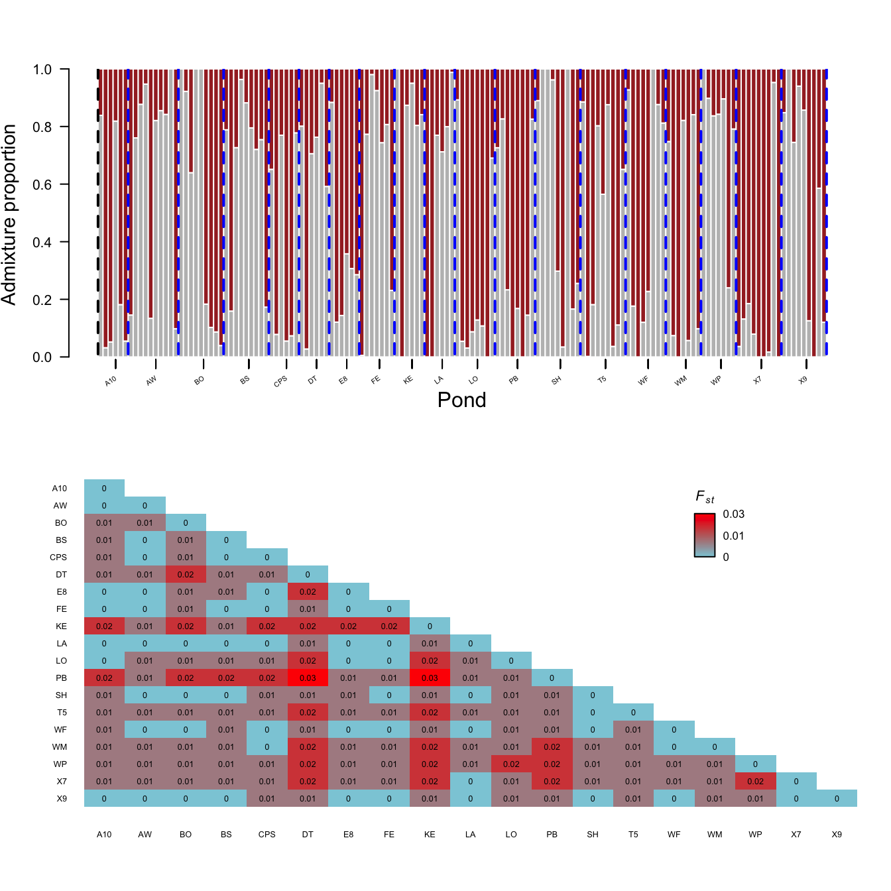
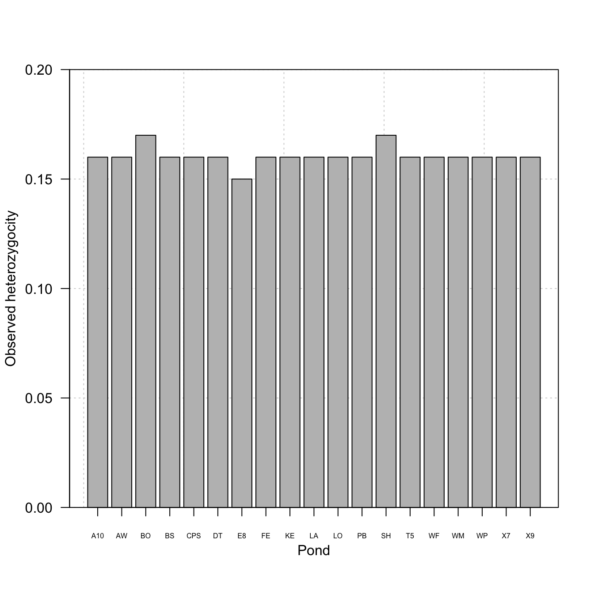
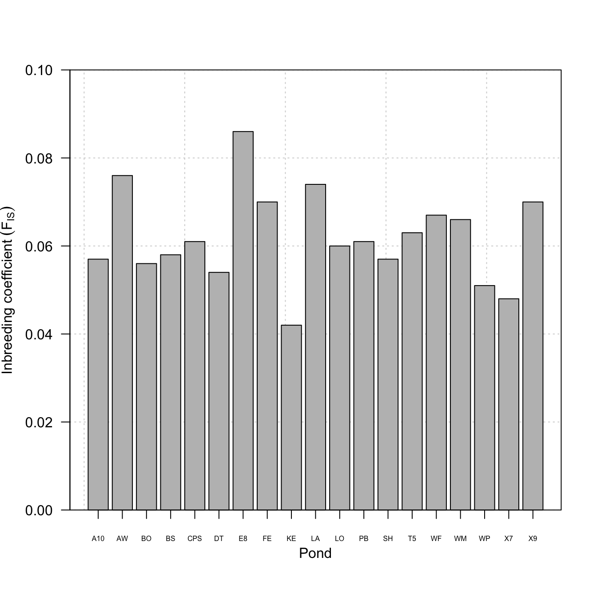
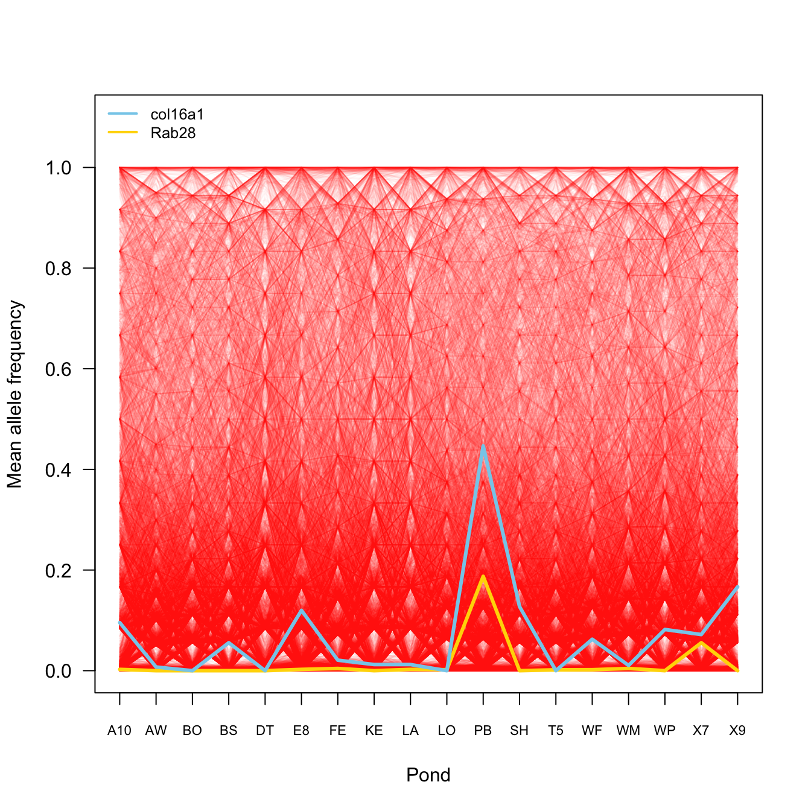

## loading packages
library(adegenet)
library(ade4)
library(boot)
library(blme)
library(car)
library(canadamaps)
library(data.table)
library(dartRverse)
library(ecodist)
library(GenomicRanges)
library(hierfstat)
library(LEA)
library(leaflet)
library(lfmm)
library(lme4)
library(maps)
library(mapplots)
library(mapproj)
library(rnaturalearth)
library(pegas)
library(poppr)
library(prettymapr)
library(qqman)
library(qvalue)
library(reshape2)
library(sf)
library(scales)
library(SeqArray)
library(SeqVarTools)
library(shape)
library(SNPRelate)
library(stringr)
library(tigris)
library(OutFLANK)
library(vcfR)
library(xtable)Yale Myers Forest - Wood Frog Pop Gen Analyses
## loading project
load("/Users/dpadil10/ASU Dropbox/Dylan Padilla/Yale/YMF2018/data/aRanSyl_genind_chr_pos.RData")
metadata <- read.csv("/Users/dpadil10/ASU Dropbox/Dylan Padilla/Yale/YMF2018/data/YMF2018_RASYpopgen_sampleinfo.csv", row.names = 1)
##load("/gpfs/gibbs/project/skelly/dp996/YMF2018/data/aRanSyl_gl_chr_pos.RData")
aRanSyl_rows <- rownames(aRanSyl_genind$tab)
##aRanSyl_rows
aRanSyl_rows[-203] <- gsub(paste0("_S", ".*"), "", aRanSyl_rows[-203])
aRanSyl_rows[203] <- "YNL_SCP2016_325"
aRanSyl_rows <- data.frame(match.col = aRanSyl_rows)
metadata$match.col <- paste(metadata$Pop, metadata$Extract, sep = "_")
metadata$match.col[260:263] <- paste("YNL_", metadata$match.col[260:263], sep = "")
metadata$match.col[3:48] <- gsub("(_)(.)", "\\10\\2", metadata$match.col[3:48])
##metadata$match.col
## cleaning 'meta' to ensure exactly one record per 'match.col'
## this prevents the row count from expanding if meta has duplicate IDs
meta_unique <- metadata[!duplicated(metadata$match.col), ]
##meta_unique$match.col
## perform a Left Join
## 'all.x = TRUE' ensures we keep all 205 rows from aRanSyl_rows
#merged.tab <- merge(aRanSyl_rows, meta_unique, by = "match.col", all.x = TRUE)
merged.tab <- merge(aRanSyl_rows, meta_unique, by = "match.col", all.x = FALSE)
str(merged.tab)'data.frame': 203 obs. of 14 variables:
$ match.col : chr "MAD2017_330" "YMF2018_040" "YMF2018_041" "YMF2018_042" ...
$ Pop : chr "MAD2017" "YMF2018" "YMF2018" "YMF2018" ...
$ Extract : int 330 40 41 42 44 45 46 48 49 50 ...
$ sample_coverage : int 45486 26391 32903 28320 26095 37489 22253 23159 29912 22059 ...
$ YPM.cat : chr "HERA.021865" NA NA NA ...
$ Pond : chr "Concord" "WM" "BP2" "BP2" ...
$ Clutch : int 1 28 3 1 15 14 18 24 32 4 ...
$ Coll.Year : int 2017 2018 2018 2018 2018 2018 2018 2018 2018 2018 ...
$ Age : chr "adult" "hatchling" "hatchling" "hatchling" ...
$ Extract.Date : chr "8-Nov-19" "7-Aug-19" "8-Oct-19" "8-Oct-19" ...
$ Conc.Qubit.ng_ul: num 355 205 600 259 510 510 600 485 350 447 ...
$ Accession : chr "YPM tissue" "2018 UCONN sample" "2018 UCONN sample" "2018 UCONN sample" ...
$ Lat : num 41.3 42 42 42 41.9 ...
$ Long : num -72.6 -72.1 -72.2 -72.2 -72.1 ...##merged.tab
#write.csv(merged.tab, file = "/Users/dpadil10/ASU Dropbox/Dylan Padilla/Yale/YMF2018/data/YMF2018_metadata_Mar-20-26.csv", row.names = FALSE)
## I have to remove the second and third sample of the genind object
## because I cannot find them in the metadata
ind.rm <- c("YMF2018_026_S23_R1_001", "YMF2018_035_S47_R1_001")
aRanSyl_genind_pruned <- indNames(aRanSyl_genind)[!indNames(aRanSyl_genind) %in% ind.rm]
##aRanSyl_genind_pruned
aRanSyl_genind <- aRanSyl_genind[aRanSyl_genind_pruned, ]
aRanSyl_genind/// GENIND OBJECT /////////
// 203 individuals; 15,570 loci; 31,140 alleles; size: 61.5 Mb
// Basic content
@tab: 203 x 31140 matrix of allele counts
@loc.n.all: number of alleles per locus (range: 2-2)
@loc.fac: locus factor for the 31140 columns of @tab
@all.names: list of allele names for each locus
@ploidy: ploidy of each individual (range: 2-2)
@type: codom
@call: .local(x = x, i = i, j = j, drop = drop)
// Optional content
@other: a list containing: chromosome position ## Converting genlight object to geno object
##gl2geno(aRanSyl_gl, outfile = "aRanSyl_geno",
##outpath = "/gpfs/gibbs/project/skelly/dp996/YMF2018/data/", verbose = NULL)
## Run snmf algorithm
##snmf1 <- snmf("/gpfs/gibbs/project/skelly/dp996/YMF2018/data/aRanSyl_geno.geno",
## K = 1:10, # number of K ancestral populations to run
## repetitions = 50, # 50 repetitions for each K
## entropy = TRUE, # calculate cross-entropy
## project = "new")
snmf1 <- load.snmfProject("/Users/dpadil10/ASU Dropbox/Dylan Padilla/Yale/YMF2018/data/aRanSyl_geno.snmfProject")
## extract the cross-entropy of all runs where K = 1
ce <- cross.entropy(snmf1, K = 1)
ce2 <- cross.entropy(snmf1, K = 2)
##ce
## find the run with the lowest cross-entropy
lowest.ce <- which.min(ce)
lowest.ce2 <- which.min(ce2)
##lowest.ce
## extract Q-matrix for the best run
qmatrix <- as.data.frame(Q(snmf1, K = 1, run = lowest.ce))
qmatrix2 <- as.data.frame(Q(snmf1, K = 2, run = lowest.ce2))
##head(qmatrix)
## because I removed samples 2 and 3 from the genind object,
## I have to remove rows 2 and 3 of the qmatrix
qmatrix <- qmatrix[-c(2, 3), ]
qmatrix2 <- qmatrix2[-c(2, 3), ]
##qmatrix
aRanSyl_genind$pop <- as.factor(merged.tab$Pond)
summary(aRanSyl_genind$pop) 3WS A10 AA006 AW BethBog BO BP2 BS
3 6 2 10 1 9 2 9
C3 Concord CPN CPS DE DT E1 E8
4 1 2 6 3 6 4 6
F1 FE FHE GB KE LA LO MI
1 7 4 4 6 6 8 2
NAT PB PH PW QU RichProp S4 ScranProp
3 8 3 4 1 2 2 1
SD SH T5 W1 WF WM WP X7
4 9 9 1 8 7 7 9
X9 YP05 YP16 Z5
9 1 1 2 ##aRanSyl_genind$pop
## some of the ponds contain less than 5 individuals.
## I am only keeping ponds with >= 5 individuals
tab <- data.frame(ind = summary(aRanSyl_genind$pop))
tab$pop <- rownames(tab)
tab.pruned <- tab[tab$ind >= 5, ]
aRanSyl_genind_pops <- popsub(aRanSyl_genind, sublist = tab.pruned$pop)
aRanSyl_genind_pops/// GENIND OBJECT /////////
// 145 individuals; 15,570 loci; 31,107 alleles; size: 54.6 Mb
// Basic content
@tab: 145 x 31107 matrix of allele counts
@loc.n.all: number of alleles per locus (range: 1-2)
@loc.fac: locus factor for the 31107 columns of @tab
@all.names: list of allele names for each locus
@ploidy: ploidy of each individual (range: 2-2)
@type: codom
@call: popsub(gid = aRanSyl_genind, sublist = tab.pruned$pop)
// Optional content
@pop: population of each individual (group size range: 6-10)
@other: a list containing: chromosome position ## the number of alleles per locus seems to range from 1 to 2
## we have to work with only biallelic loci, so there should always be 2
n <- names(which(nAll(aRanSyl_genind_pops) == 2))
aRanSyl_genind_pops <- aRanSyl_genind_pops[loc = n]
aRanSyl_genind_pops/// GENIND OBJECT /////////
// 145 individuals; 15,537 loci; 31,074 alleles; size: 54.6 Mb
// Basic content
@tab: 145 x 31074 matrix of allele counts
@loc.n.all: number of alleles per locus (range: 2-2)
@loc.fac: locus factor for the 31074 columns of @tab
@all.names: list of allele names for each locus
@ploidy: ploidy of each individual (range: 2-2)
@type: codom
@call: .local(x = x, i = i, j = j, loc = ..1, drop = drop)
// Optional content
@pop: population of each individual (group size range: 6-10)
@other: a list containing: chromosome position ##rownames(aRanSyl_genind_pops$tab)
ind.rm2 <- data.frame(match.col = gsub(paste0("_S", ".*"), "",
rownames(aRanSyl_genind_pops$tab)))
merged.tab2 <- merge(merged.tab, ind.rm2, by = "match.col")
##cbind(merged.tab2$match.col, rownames(aRanSyl_genind_pops$tab))
str(merged.tab2)'data.frame': 145 obs. of 14 variables:
$ match.col : chr "YMF2018_040" "YMF2018_044" "YMF2018_045" "YMF2018_046" ...
$ Pop : chr "YMF2018" "YMF2018" "YMF2018" "YMF2018" ...
$ Extract : int 40 44 45 46 48 49 50 51 52 53 ...
$ sample_coverage : int 26391 26095 37489 22253 23159 29912 22059 22929 39890 39135 ...
$ YPM.cat : chr NA NA NA NA ...
$ Pond : chr "WM" "FE" "FE" "FE" ...
$ Clutch : int 28 15 14 18 24 32 4 36 31 18 ...
$ Coll.Year : int 2018 2018 2018 2018 2018 2018 2018 2018 2018 2018 ...
$ Age : chr "hatchling" "hatchling" "hatchling" "hatchling" ...
$ Extract.Date : chr "7-Aug-19" "8-Oct-19" "8-Oct-19" "8-Oct-19" ...
$ Conc.Qubit.ng_ul: num 205 510 510 600 485 350 447 409 580 252 ...
$ Accession : chr "2018 UCONN sample" "2018 UCONN sample" "2018 UCONN sample" "2018 UCONN sample" ...
$ Lat : num 42 41.9 41.9 41.9 41.9 ...
$ Long : num -72.1 -72.1 -72.1 -72.1 -72.1 ...##save(aRanSyl_genind_pops,
## file = "/Users/dpadil10/ASU Dropbox/Dylan Padilla/Yale/YMF2018/data/aRanSyl_genind_pos_pops.Rdata")
## because I ended up removing more individuals from the dataset,
## now I have to make sure I remove the same individuals from the
## qmatrix table. Practically, I do not have to do this because
## in this particular case, every individual has exactly the same
## genetic ancestry. But it is still a good practice to remove
## the right individuals from the qmatrix table. This is because
## if there were a strong population structure, the individuals
## you remove from the qmatrix (i.e., each row) DO MATTER!
tab.rm1 <- data.frame(ind = rownames(aRanSyl_genind$tab),
qmatrix = qmatrix)
tab.rm1.1 <- data.frame(ind = rownames(aRanSyl_genind$tab),
qmatrix = qmatrix2)
tab.rm2 <- data.frame(ind = rownames(aRanSyl_genind_pops$tab),
pop = aRanSyl_genind_pops$pop)
tab.rm2.1 <- data.frame(ind = rownames(aRanSyl_genind_pops$tab),
pop = aRanSyl_genind_pops$pop)
## the merging below guarantees that I am removing the correct
## individuals from the qmatrix
tab2 <- merge(tab.rm2, tab.rm1, by = "ind")
tab2.1 <- merge(tab.rm2.1, tab.rm1.1, by = "ind")
str(tab2)'data.frame': 145 obs. of 3 variables:
$ ind : chr "YMF2018_040_S59_R1_001" "YMF2018_044_S1_R1_001" "YMF2018_045_S12_R1_001" "YMF2018_046_S24_R1_001" ...
$ pop : Factor w/ 19 levels "A10","AW","BO",..: 16 8 8 8 8 3 3 3 3 2 ...
$ qmatrix: int 1 1 1 1 1 1 1 1 1 1 ...str(tab2.1)'data.frame': 145 obs. of 4 variables:
$ ind : chr "YMF2018_040_S59_R1_001" "YMF2018_044_S1_R1_001" "YMF2018_045_S12_R1_001" "YMF2018_046_S24_R1_001" ...
$ pop : Factor w/ 19 levels "A10","AW","BO",..: 16 8 8 8 8 3 3 3 3 2 ...
$ qmatrix.V1: num 0.74778 0.00533 0.77329 0.98053 0.92485 ...
$ qmatrix.V2: num 0.2522 0.9947 0.2267 0.0195 0.0751 ...qmplot <- tab2
qmplot2 <- tab2.1
qmplot$pop <- as.character(qmplot$pop)
qmplot2$pop <- as.character(qmplot2$pop)
str(qmplot)'data.frame': 145 obs. of 3 variables:
$ ind : chr "YMF2018_040_S59_R1_001" "YMF2018_044_S1_R1_001" "YMF2018_045_S12_R1_001" "YMF2018_046_S24_R1_001" ...
$ pop : chr "WM" "FE" "FE" "FE" ...
$ qmatrix: int 1 1 1 1 1 1 1 1 1 1 ...str(qmplot2)'data.frame': 145 obs. of 4 variables:
$ ind : chr "YMF2018_040_S59_R1_001" "YMF2018_044_S1_R1_001" "YMF2018_045_S12_R1_001" "YMF2018_046_S24_R1_001" ...
$ pop : chr "WM" "FE" "FE" "FE" ...
$ qmatrix.V1: num 0.74778 0.00533 0.77329 0.98053 0.92485 ...
$ qmatrix.V2: num 0.2522 0.9947 0.2267 0.0195 0.0751 ...qmplot <- qmplot[order(qmplot$pop), ]
qmplot2 <- qmplot2[order(qmplot2$pop), ]
##aggregate(qmplot$ind, list(qmplot$pop), length)## plotting entropy to determine K
par(mgp = c(3.2, 1, 0))
plot(snmf1, col = "black", cex = 1.5, pch = 19, las = 1)
Arrows(x = 1, y = 0.490, x1 = 1, y1 = 0.495, col = "black",
arr.type = "triangle", code = 1, lwd = 1.5, arr.length = 0.2)
## computing pairwise Fst test
##aRanSyl_fst <- genet.dist(aRanSyl_genind_pops, method = "WC84") %>% round(digits = 3)
## saving here just in case the commands below fail
##save(aRanSyl_fst,
## file = "/Users/dpadil10/ASU Dropbox/Dylan Padilla/Yale/YMF2018/data/aRanSyl_fst.RData")
## plotting admixture proportions and genetic differentiation
layout(matrix(c(1, 1, 1, 1, 1, 1,
1, 1, 1, 1, 1, 1,
2, 2, 2, 2, 2, 2,
2, 2, 2, 2, 2, 2), ncol = 6, nrow = 4, byrow = TRUE))
barplot(t(qmplot[3]), col = "gray", border = "white", space = 0,
xlab = "", xaxt = "n", ylab = "Admixture proportion",
las = 1, cex.lab = 1.4)
## adding population labels to the axis:
medians <- c()
for(i in 1:length(qmplot$pop)){
axis(1, at = median(which(qmplot$pop == qmplot$pop[i])), labels = "")
medians <- c(medians, median(which(qmplot$pop == qmplot$pop[i])))
}
names <- unique(qmplot$pop)
obj <- tapply(qmplot$ind, qmplot$pop, length)
objA10 AW BO BS CPS DT E8 FE KE LA LO PB SH T5 WF WM WP X7 X9
6 10 9 9 6 6 6 7 6 6 8 8 9 9 8 7 7 9 9 segments(x0 = 0, y0 = 0.01,
x1 = 0, y1 = 1, lty = 2, lwd = 2)
for(i in 1:length(obj)){
sum <- sum(obj[1:i])
##print(sum)
segments(x0 = sum, y0 = 0.01,
x1 = sum, y1 = 1, lty = 2, lwd = 2)
}
text(x = as.numeric(unique(as.character(medians))), y = par("usr")[3] - 0.06,
labels = unique(qmplot$pop), xpd = NA, srt = 35, cex = 0.5, adj = 1)
mtext("Pond", side = 1, line = 2)
load("/Users/dpadil10/ASU Dropbox/Dylan Padilla/Yale/YMF2018/data/aRanSyl_fst.RData")
aRanSyl_fst_mat <- as.matrix(aRanSyl_fst)
aRanSyl_fst_mat[aRanSyl_fst_mat < 0] <- 0
aRanSyl_fst_mat[1:4, 1:4] A10 AW BO BS
A10 0.000 0.005 0.007 0.007
AW 0.005 0.000 0.006 0.003
BO 0.007 0.006 0.000 0.007
BS 0.007 0.003 0.007 0.000## creating heatmap to plot genetic differentiation between
## populations
get_lower_tri<-function(cor_matrix){
cor_matrix[lower.tri(cor_matrix, diag = TRUE)]
return(cor_matrix)
}
lower_tri_matrix <- aRanSyl_fst_mat[lower.tri(round(aRanSyl_fst_mat, 2),
diag = TRUE)]
my_palette <- colorRampPalette(c("lightblue", "red"))(n = 100)
## create matrix
fst_matrix <- matrix(NA, nrow = 19, ncol = 19)
fst_matrix[lower.tri(fst_matrix, diag = TRUE)] <- round(lower_tri_matrix, 2)
labs <- colnames(aRanSyl_fst_mat)
par(mar = c(5, 5, 2, 2))
## creating the image
## we transform the matrix so it looks like the table (Row 1 at top)
## t() transposes it, and we reverse the columns to flip the y-axis
grid_data <- t(fst_matrix[nrow(fst_matrix):1, ])
## generate the heatmap colors
my_colors <- colorRampPalette(c("#8ccddb", "#bf6c6c", "red"))(100)
image(
1:19, 1:19, # X and Y coordinates
grid_data, # The data
axes = FALSE, # Turn off default axes (we will draw our own)
col = my_colors, # Colors
xlab = "", ylab = ""
)
axis(2, at = 1:19, labels = rev(labs), las = 2,
tick = FALSE, cex.axis = 0.6)
axis(1, at = 1:19, labels = labs, las = 2, tick = FALSE,
cex.axis = 0.6, las = 1)
## we loop through the original matrix to place the numbers
n <- 19
for (row in 1:n) {
for (col in 1:n) {
val <- fst_matrix[row, col]
if (!is.na(val)) {
# Logic:
# x coordinate = column index
# y coordinate = n + 1 - row index (because y=1 is the bottom)
text(x = col, y = n + 1 - row, labels = val, col = "black", cex = 0.6)
}
}
}
## legend settings
leg_x <- 15.5 # X starting position
leg_y <- 15.0 # Y starting position (bottom of legend)
leg_w <- 0.5 # Width of the bar
leg_h <- 2.5 # Height of the bar
num_cols <- length(my_colors)
## draw the gradient Bar
## we stack tiny rectangles on top of each other
for (i in 1:num_cols) {
y_start <- leg_y + (i - 1) * (leg_h / num_cols)
y_end <- leg_y + (i) * (leg_h / num_cols)
rect(
xleft = leg_x,
ybottom = y_start,
xright = leg_x + leg_w,
ytop = y_end,
col = my_colors[i],
border = NA
)
}
## add a black border around the legend bar
rect(leg_x, leg_y, leg_x + leg_w, leg_y + leg_h, border = "black")
## add Legend Text Labels (0, 0.5, 1.0)
## we map the data range (0 to 0.83) to the legend height
min_val <- 0
max_val <- max(fst_matrix, na.rm=TRUE) # approx 0.83
## label position 1 (Bottom)
text(x = leg_x + leg_w + 0.2, y = leg_y, labels = min_val,
adj = 0, cex = 0.8)
## label position 2 (Middle)
text(x = leg_x + leg_w + 0.2, y = leg_y + (leg_h / 2),
labels = round((max_val/2), 2), adj = 0, cex = 0.8)
## label position 3 (Top)
text(x = leg_x + leg_w + 0.2, y = leg_y + leg_h,
labels = max_val, adj = 0, cex = 0.8)
## add Title above legend
text(x = leg_x + (leg_w/2), y = leg_y + leg_h + 1,
labels = expression(italic(F[st])), font = 2, cex = 1)
## This is what would happen if we select K = 2 in the strcuture analysis
layout(matrix(c(1, 1, 1, 1, 1, 1,
1, 1, 1, 1, 1, 1,
2, 2, 2, 2, 2, 2,
2, 2, 2, 2, 2, 2), ncol = 6, nrow = 4, byrow = TRUE))
barplot(t(qmplot2[3:4]), col = c("gray", "brown"), border = "white", space = 0,
xlab = "", xaxt = "n", ylab = "Admixture proportion",
las = 1, cex.lab = 1.4)
## adding population labels to the axis:
medians <- c()
for(i in 1:length(qmplot2$pop)){
axis(1, at = median(which(qmplot2$pop == qmplot2$pop[i])), labels = "")
medians <- c(medians, median(which(qmplot2$pop == qmplot2$pop[i])))
}
names <- unique(qmplot2$pop)
obj <- tapply(qmplot2$ind, qmplot2$pop, length)
objA10 AW BO BS CPS DT E8 FE KE LA LO PB SH T5 WF WM WP X7 X9
6 10 9 9 6 6 6 7 6 6 8 8 9 9 8 7 7 9 9 segments(x0 = 0, y0 = 0.01,
x1 = 0, y1 = 1, lty = 2, lwd = 2)
for(i in 1:length(obj)){
sum <- sum(obj[1:i])
##print(sum)
segments(x0 = sum, y0 = 0.01,
x1 = sum, y1 = 1, lty = 2, lwd = 2,
col = "blue")
}
text(x = as.numeric(unique(as.character(medians))), y = par("usr")[3] - 0.06,
labels = unique(qmplot2$pop), xpd = NA, srt = 35, cex = 0.5, adj = 1)
mtext("Pond", side = 1, line = 2)
load("/Users/dpadil10/ASU Dropbox/Dylan Padilla/Yale/YMF2018/data/aRanSyl_fst.RData")
aRanSyl_fst_mat <- as.matrix(aRanSyl_fst)
aRanSyl_fst_mat[aRanSyl_fst_mat < 0] <- 0
aRanSyl_fst_mat[1:4, 1:4] A10 AW BO BS
A10 0.000 0.005 0.007 0.007
AW 0.005 0.000 0.006 0.003
BO 0.007 0.006 0.000 0.007
BS 0.007 0.003 0.007 0.000## creating heatmap to plot genetic differentiation between
## populations
get_lower_tri<-function(cor_matrix){
cor_matrix[lower.tri(cor_matrix, diag = TRUE)]
return(cor_matrix)
}
lower_tri_matrix <- aRanSyl_fst_mat[lower.tri(round(aRanSyl_fst_mat, 2),
diag = TRUE)]
my_palette <- colorRampPalette(c("lightblue", "red"))(n = 100)
## create matrix
fst_matrix <- matrix(NA, nrow = 19, ncol = 19)
fst_matrix[lower.tri(fst_matrix, diag = TRUE)] <- round(lower_tri_matrix, 2)
labs <- colnames(aRanSyl_fst_mat)
par(mar = c(5, 5, 2, 2))
## creating the image
## we transform the matrix so it looks like the table (Row 1 at top)
## t() transposes it, and we reverse the columns to flip the y-axis
grid_data <- t(fst_matrix[nrow(fst_matrix):1, ])
## generate the heatmap colors
my_colors <- colorRampPalette(c("#8ccddb", "#bf6c6c", "red"))(100)
image(
1:19, 1:19, # X and Y coordinates
grid_data, # The data
axes = FALSE, # Turn off default axes (we will draw our own)
col = my_colors, # Colors
xlab = "", ylab = ""
)
axis(2, at = 1:19, labels = rev(labs), las = 2,
tick = FALSE, cex.axis = 0.6)
axis(1, at = 1:19, labels = labs, las = 2, tick = FALSE,
cex.axis = 0.6, las = 1)
## we loop through the original matrix to place the numbers
n <- 19
for (row in 1:n) {
for (col in 1:n) {
val <- fst_matrix[row, col]
if (!is.na(val)) {
# Logic:
# x coordinate = column index
# y coordinate = n + 1 - row index (because y=1 is the bottom)
text(x = col, y = n + 1 - row, labels = val, col = "black", cex = 0.6)
}
}
}
## legend settings
leg_x <- 15.5 # X starting position
leg_y <- 15.0 # Y starting position (bottom of legend)
leg_w <- 0.5 # Width of the bar
leg_h <- 2.5 # Height of the bar
num_cols <- length(my_colors)
## draw the gradient Bar
## we stack tiny rectangles on top of each other
for (i in 1:num_cols) {
y_start <- leg_y + (i - 1) * (leg_h / num_cols)
y_end <- leg_y + (i) * (leg_h / num_cols)
rect(
xleft = leg_x,
ybottom = y_start,
xright = leg_x + leg_w,
ytop = y_end,
col = my_colors[i],
border = NA
)
}
## add a black border around the legend bar
rect(leg_x, leg_y, leg_x + leg_w, leg_y + leg_h, border = "black")
## add Legend Text Labels (0, 0.5, 1.0)
## we map the data range (0 to 0.83) to the legend height
min_val <- 0
max_val <- max(fst_matrix, na.rm=TRUE) # approx 0.83
## label position 1 (Bottom)
text(x = leg_x + leg_w + 0.2, y = leg_y, labels = min_val,
adj = 0, cex = 0.8)
## label position 2 (Middle)
text(x = leg_x + leg_w + 0.2, y = leg_y + (leg_h / 2),
labels = round((max_val/2), 2), adj = 0, cex = 0.8)
## label position 3 (Top)
text(x = leg_x + leg_w + 0.2, y = leg_y + leg_h,
labels = max_val, adj = 0, cex = 0.8)
## add Title above legend
text(x = leg_x + (leg_w/2), y = leg_y + leg_h + 1,
labels = expression(italic(F[st])), font = 2, cex = 1)
## calculating heterozygosity per site
aRanSyl_he <- basic.stats(aRanSyl_genind_pops, diploid = TRUE)
he_aRanSyl <- apply(aRanSyl_he$Ho, MARGIN = 2, FUN = mean, na.rm = TRUE) %>%
round(digits = 2)
## calculating inbreeding coefficient (Fis)
aRanSyl_Fis <- apply(aRanSyl_he$Fis, MARGIN = 2, FUN = mean, na.rm = TRUE) %>%
round(digits = 3)barplot(he_aRanSyl, ylim = c(0, 0.2), las = 1,
ylab = "Observed heterozygocity", xaxt = "n",
col = "white", yaxt = "n", border = FALSE)
grid()
par(new = TRUE)
barplot(he_aRanSyl, ylim = c(0, 0.2), las = 1,
xaxt = "n", ylab = "")
box()
axis(side = 1, at = mp, labels = names(he_aRanSyl), cex.axis = 0.5)
mtext(side = 1, 'Pond', line = 2)
barplot(aRanSyl_Fis, ylim = c(0, 0.10), las = 1,
ylab = expression("Inbreeding coefficient"~(F[IS])), xaxt = "n",
col = "white", yaxt = "n", border = FALSE)
grid()
par(new = TRUE)
barplot(aRanSyl_Fis, ylim = c(0, 0.10), las = 1,
xaxt = "n", ylab = "")
box()
axis(side = 1, at = mp2, labels = names(aRanSyl_Fis), cex.axis = 0.5)
mtext(side = 1, 'Pond', line = 2)
## running OutFLANK using dartR wrapper script
outflnk <- gl.outflank(aRanSyl_genind_pops, qthreshold = 0.05, plot = FALSE)Calculating FSTs, may take a few minutes...
[1] "10000 done of 31074"
[1] "20000 done of 31074"
[1] "30000 done of 31074"## extracting OutFLANK results
outflnk.df <- outflnk$outflank$results
## removing duplicated rows for each SNP locus
rowsToRemove <- seq(1, nrow(outflnk.df), by = 2)
outflnk.df <- outflnk.df[-rowsToRemove, ]
## printing number of outliers (TRUE)
outflnk.df$OutlierFlag %>% summary Mode FALSE
logical 7768 ## extracting outlier IDs
outlier_indexes <- which(outflnk.df$OutlierFlag == TRUE)
outlierID <- locNames(aRanSyl_genind_pops)[outlier_indexes]
##outlierID
# converting Fsts <0 to zero
outflnk.df$FST[outflnk.df$FST < 0] <- 0
# Italic labels
fstlab <- expression(italic("F")[st])
hetlab <- expression(italic("H")[e])
## plot He versus Fst
ggplot(data = outflnk.df) +
geom_point(aes(x = He, y = FST, colour = OutlierFlag)) +
scale_colour_manual(values = c("black","red"),
labels = c("Neutral SNP","Outlier SNP"))+
ggtitle("OutFLANK outlier test") + xlab(hetlab) + ylab(fstlab) +
theme(legend.title = element_blank(),
plot.title = element_text(hjust = 0.5, size = 15,
face = "bold"))
## Genotype-environment association analysis
env <- read.csv("/Users/dpadil10/ASU Dropbox/Dylan Padilla/Yale/YMF2018/data/YMF_PondLevelData_DescriptiveInformation.csv")
##str(env)
names(env)[1] <- "Pond"
str(merged.tab2)'data.frame': 145 obs. of 14 variables:
$ match.col : chr "YMF2018_040" "YMF2018_044" "YMF2018_045" "YMF2018_046" ...
$ Pop : chr "YMF2018" "YMF2018" "YMF2018" "YMF2018" ...
$ Extract : int 40 44 45 46 48 49 50 51 52 53 ...
$ sample_coverage : int 26391 26095 37489 22253 23159 29912 22059 22929 39890 39135 ...
$ YPM.cat : chr NA NA NA NA ...
$ Pond : chr "WM" "FE" "FE" "FE" ...
$ Clutch : int 28 15 14 18 24 32 4 36 31 18 ...
$ Coll.Year : int 2018 2018 2018 2018 2018 2018 2018 2018 2018 2018 ...
$ Age : chr "hatchling" "hatchling" "hatchling" "hatchling" ...
$ Extract.Date : chr "7-Aug-19" "8-Oct-19" "8-Oct-19" "8-Oct-19" ...
$ Conc.Qubit.ng_ul: num 205 510 510 600 485 350 447 409 580 252 ...
$ Accession : chr "2018 UCONN sample" "2018 UCONN sample" "2018 UCONN sample" "2018 UCONN sample" ...
$ Lat : num 42 41.9 41.9 41.9 41.9 ...
$ Long : num -72.1 -72.1 -72.1 -72.1 -72.1 ...length(merged.tab2$match.col)[1] 145merged.tab3 <- merge(merged.tab2, env[-c(8, 9)], by = "Pond")
str(merged.tab3)'data.frame': 139 obs. of 66 variables:
$ Pond : chr "A10" "A10" "A10" "A10" ...
$ match.col : chr "YMF2018_162" "YMF2018_345" "YMF2018_350" "YMF2018_347" ...
$ Pop : chr "YMF2018" "YMF2018" "YMF2018" "YMF2018" ...
$ Extract : int 162 345 350 347 161 373 54 63 60 53 ...
$ sample_coverage : int 44018 35428 29436 28848 58595 27271 30643 38625 26758 39135 ...
$ YPM.cat : chr "AZA.01718" "AZA.01739" "AZA.01733" "AZA.01737" ...
$ Clutch : int 2 29 28 25 5 16 32 14 13 18 ...
$ Coll.Year : int 2018 2018 2018 2018 2018 2018 2018 2018 2018 2018 ...
$ Age : chr "embryo" "embryo" "embryo" "embryo" ...
$ Extract.Date : chr "16-Oct-19" "9-Nov-19" "9-Nov-19" "9-Nov-19" ...
$ Conc.Qubit.ng_ul : num 26.8 60.3 52.6 78.5 32.5 55.9 349 336 284 252 ...
$ Accession : chr "2018 YMF genetics" "2018 YMF genetics" "2018 YMF genetics" "2018 YMF genetics" ...
$ Lat : num 42 42 42 42 42 ...
$ Long : num -72.1 -72.1 -72.1 -72.1 -72.1 ...
$ pond_name : chr "A10" "A10" "A10" "A10" ...
$ alt_pond_id : chr "A10" "A10" "A10" "A10" ...
$ elevation : num 255 255 255 255 255 ...
$ wtGSF : num 14.8 14.8 14.8 14.8 14.8 ...
$ utm_83_northing : int 4649196 4649196 4649196 4649196 4649196 4649196 0 0 0 0 ...
$ UTM_83_easting : int 736518 736518 736518 736518 736518 736518 0 0 0 0 ...
$ source_coord_system : chr "Lat Long" "Lat Long" "Lat Long" "Lat Long" ...
$ area_m2 : int 1500 1500 1500 1500 1500 1500 538 538 538 538 ...
$ area_is_approximate : logi TRUE TRUE TRUE TRUE TRUE TRUE ...
$ amop_introduction : logi FALSE FALSE FALSE FALSE FALSE FALSE ...
$ wtGSF_1999_grid : num NA NA NA NA NA NA NA NA NA NA ...
$ offGSFavg_1999_grid : num NA NA NA NA NA NA NA NA NA NA ...
$ offGSFsd_1999_grid : num NA NA NA NA NA NA NA NA NA NA ...
$ onGSFavg_1999_grid : num NA NA NA NA NA NA NA NA NA NA ...
$ onGSFsd_1999_grid : num NA NA NA NA NA NA NA NA NA NA ...
$ wtGSF_1999_card : num NA NA NA NA NA NA NA NA NA NA ...
$ offGSFavg_1999_card : num NA NA NA NA NA NA NA NA NA NA ...
$ offGSFsd_1999_card : num NA NA NA NA NA NA NA NA NA NA ...
$ onGSFavg_1999_card : num NA NA NA NA NA NA NA NA NA NA ...
$ onGSFsd_1999_card : num NA NA NA NA NA NA NA NA NA NA ...
$ wtGSF_2012_target : num 10.2 10.2 10.2 10.2 10.2 ...
$ offGSFavg_2012_target: num 13 13 13 13 13 ...
$ offGSFsd_2012_target : num 5.37 5.37 5.37 5.37 5.37 ...
$ onGSFavg_2012_target : num 9.02 9.02 9.02 9.02 9.02 ...
$ onGSFsd_2012_target : num 1.32 1.32 1.32 1.32 1.32 ...
$ wtGSF_2017_card : num 14.8 14.8 14.8 14.8 14.8 ...
$ wtGSFvar_2017_card : num 736 736 736 736 736 ...
$ wtGSFsd_2017_card : num 27.1 27.1 27.1 27.1 27.1 ...
$ offGSFavg_2017_card : num 24.2 24.2 24.2 24.2 24.2 ...
$ offGSFsd_2017_card : num 21.4 21.4 21.4 21.4 21.4 ...
$ onGSFavg_2017_card : num 10.9 10.9 10.9 10.9 10.9 ...
$ onGSFsd_2017_card : num 3.01 3.01 3.01 3.01 3.01 ...
$ Canopy_Perc_New : num 87.7 87.7 87.7 87.7 87.7 ...
$ Forest_Perc200_New : num 91.6 91.6 91.6 91.6 91.6 ...
$ Developed_Perc200_New: num 0 0 0 0 0 0 0 0 0 0 ...
$ Wetland_Perc200_New : num 8.37 8.37 8.37 8.37 8.37 ...
$ Deciduous_Perc : num 0.885 0.885 0.885 0.885 0.885 ...
$ Dev_High_Perc : num 0 0 0 0 0 0 0 0 0 0 ...
$ Dev_Low_Perc : num 0 0 0 0 0 0 0 0 0 0 ...
$ Dev_Med_Perc : num 0 0 0 0 0 0 0 0 0 0 ...
$ Dev_Open_Perc : num 0 0 0 0 0 0 0 0 0 0 ...
$ Emer_Wet_Perc : num 0 0 0 0 0 0 0 0 0 0 ...
$ Ever_Forest_Perc : num 8.42 8.42 8.42 8.42 8.42 ...
$ Grass_Perc : num 0 0 0 0 0 0 0 0 0 0 ...
$ Mixed_Forest_Perc : num 82.3 82.3 82.3 82.3 82.3 ...
$ Open_Water_Perc : num 0 0 0 0 0 0 0 0 0 0 ...
$ Pasture_Perc : num 0 0 0 0 0 0 0 0 0 0 ...
$ Shrub_Perc : num 0 0 0 0 0 0 0 0 0 0 ...
$ Wood_Wet_Perc : num 8.37 8.37 8.37 8.37 8.37 ...
$ Dis_to_road : num 662 662 662 662 662 ...
$ description : chr "WIDE STREAM IN VALLEY EXTENDING N/S PERP TO TRANSECT" "WIDE STREAM IN VALLEY EXTENDING N/S PERP TO TRANSECT" "WIDE STREAM IN VALLEY EXTENDING N/S PERP TO TRANSECT" "WIDE STREAM IN VALLEY EXTENDING N/S PERP TO TRANSECT" ...
$ comments : chr "" "" "" "" ...length(merged.tab3$match.col)[1] 139rm.pop <- merged.tab2[!merged.tab2$Pond %in% merged.tab3$Pond, ]
rm.pop <- rm.pop$Pond[1]
aRanSyl_genind_pops2 <- popsub(gid = aRanSyl_genind_pops,
exclude = rm.pop)
aRanSyl_genind_pops2/// GENIND OBJECT /////////
// 139 individuals; 15,537 loci; 31,061 alleles; size: 53.9 Mb
// Basic content
@tab: 139 x 31061 matrix of allele counts
@loc.n.all: number of alleles per locus (range: 1-2)
@loc.fac: locus factor for the 31061 columns of @tab
@all.names: list of allele names for each locus
@ploidy: ploidy of each individual (range: 2-2)
@type: codom
@call: popsub(gid = aRanSyl_genind_pops, exclude = rm.pop)
// Optional content
@pop: population of each individual (group size range: 6-10)
@other: a list containing: chromosome position n <- names(which(nAll(aRanSyl_genind_pops2) == 2))
aRanSyl_genind_pops2 <- aRanSyl_genind_pops2[loc = n]
aRanSyl_genind_pops2/// GENIND OBJECT /////////
// 139 individuals; 15,524 loci; 31,048 alleles; size: 53.8 Mb
// Basic content
@tab: 139 x 31048 matrix of allele counts
@loc.n.all: number of alleles per locus (range: 2-2)
@loc.fac: locus factor for the 31048 columns of @tab
@all.names: list of allele names for each locus
@ploidy: ploidy of each individual (range: 2-2)
@type: codom
@call: .local(x = x, i = i, j = j, loc = ..1, drop = drop)
// Optional content
@pop: population of each individual (group size range: 6-10)
@other: a list containing: chromosome position ## we have to make sure that the order of the rows in
## the genind$tab object is the same order of the rows
## observed in the merged.tab3 table
merged.tab3$match.col <- as.factor(merged.tab3$match.col)
##str(merged.tab3)
test <- merged.tab3[order(merged.tab3$match.col), ]
head(data.frame(test$match.col, rownames(aRanSyl_genind_pops2$tab))) test.match.col rownames.aRanSyl_genind_pops2.tab.
1 YMF2018_040 YMF2018_040_S59_R1_001
2 YMF2018_044 YMF2018_044_S1_R1_001
3 YMF2018_045 YMF2018_045_S12_R1_001
4 YMF2018_046 YMF2018_046_S24_R1_001
5 YMF2018_048 YMF2018_048_S48_R1_001
6 YMF2018_049 YMF2018_049_S60_R1_001tail(data.frame(test$match.col, rownames(aRanSyl_genind_pops2$tab))) test.match.col rownames.aRanSyl_genind_pops2.tab.
134 YMF2018_317 YMF2018_317_S214_R1_001
135 YMF2018_319 YMF2018_319_S233_R1_001
136 YMF2018_345 YMF2018_345_S196_R1_001
137 YMF2018_347 YMF2018_347_S206_R1_001
138 YMF2018_350 YMF2018_350_S216_R1_001
139 YMF2018_373 YMF2018_373_S264_R1_001merged.tab3 <- merged.tab3[order(merged.tab3$match.col), ]
merged.tab3$samples_genind <- rownames(aRanSyl_genind_pops2$tab)
##names(merged.tab3)
## we’ll use a simple approach to imputing missing genotype values:
## we will impute using the most common genotype at each SNP across
## all individuals
x <- apply(aRanSyl_genind_pops2$tab, 2,
function(x) replace(x, is.na(x),
as.numeric(names(which.max(table(x))))))
##x <- tab(aRanSyl_genind_pops, NA.method = "mean")
x[1:5, 1:5] loc31_pos65.0 loc31_pos65.1 loc31_pos86.0 loc31_pos86.1
YMF2018_040_S59_R1_001 2 0 2 0
YMF2018_044_S1_R1_001 2 0 2 0
YMF2018_045_S12_R1_001 2 0 2 0
YMF2018_046_S24_R1_001 2 0 1 1
YMF2018_048_S48_R1_001 2 0 2 0
loc163_pos10.0
YMF2018_040_S59_R1_001 2
YMF2018_044_S1_R1_001 2
YMF2018_045_S12_R1_001 2
YMF2018_046_S24_R1_001 2
YMF2018_048_S48_R1_001 2snppca <- as.data.frame(x)
snppca[1:10, 1:10] loc31_pos65.0 loc31_pos65.1 loc31_pos86.0 loc31_pos86.1
YMF2018_040_S59_R1_001 2 0 2 0
YMF2018_044_S1_R1_001 2 0 2 0
YMF2018_045_S12_R1_001 2 0 2 0
YMF2018_046_S24_R1_001 2 0 1 1
YMF2018_048_S48_R1_001 2 0 2 0
YMF2018_049_S60_R1_001 2 0 2 0
YMF2018_050_S72_R1_001 2 0 2 0
YMF2018_051_S84_R1_001 2 0 0 2
YMF2018_052_S2_R1_001 2 0 1 1
YMF2018_053_S13_R1_001 2 0 1 1
loc163_pos10.0 loc163_pos10.1 loc163_pos80.0
YMF2018_040_S59_R1_001 2 0 2
YMF2018_044_S1_R1_001 2 0 2
YMF2018_045_S12_R1_001 2 0 2
YMF2018_046_S24_R1_001 2 0 2
YMF2018_048_S48_R1_001 2 0 1
YMF2018_049_S60_R1_001 2 0 2
YMF2018_050_S72_R1_001 2 0 2
YMF2018_051_S84_R1_001 2 0 2
YMF2018_052_S2_R1_001 2 0 2
YMF2018_053_S13_R1_001 2 0 2
loc163_pos80.1 loc163_pos106.0 loc163_pos106.1
YMF2018_040_S59_R1_001 0 2 0
YMF2018_044_S1_R1_001 0 2 0
YMF2018_045_S12_R1_001 0 2 0
YMF2018_046_S24_R1_001 0 2 0
YMF2018_048_S48_R1_001 1 1 1
YMF2018_049_S60_R1_001 0 2 0
YMF2018_050_S72_R1_001 0 2 0
YMF2018_051_S84_R1_001 0 2 0
YMF2018_052_S2_R1_001 0 2 0
YMF2018_053_S13_R1_001 0 2 0## genotypes and environmental data are in the same order
identical(rownames(snppca), merged.tab3$samples_genind)[1] TRUE## adding more variables
df <- read.table("/Users/dpadil10/ASU Dropbox/Dylan Padilla/Yale/YMF2018/data/sampleData.allPonds.combined.tsv", sep = "\t", header = TRUE)
##str(df)
df$sampleName <- as.factor(df$sampleName)
names(df)[1] <- "match.col"
df <- df[!duplicated(df$match.col), ]
head(df) match.col X.IID Pond sample_coverage Age
1 MAD2017_330 <NA> Concord 45486 adult
2 MAD2017_378 <NA> Colonial 23592 adult
3 YMF2018_040 YMF2018_040_S59001.trim WM 26391 hatchling
4 YMF2018_041 YMF2018_041_S71001.trim BP2 32903 hatchling
5 YMF2018_042 YMF2018_042_S83001.trim BP2 28320 hatchling
6 YMF2018_044 YMF2018_044_S1001.trim FE 26095 hatchling
Accession wtGSF harmMeanDepth temp Area harmMean extProb
1 YPM tissue NA NA NA NA NA NA
2 YPM tissue NA NA NA NA NA NA
3 2018 UCONN sample 17.39694 NA 11.66065 1260 28.43479 0
4 2018 UCONN sample NA NA NA NA NA NA
5 2018 UCONN sample NA NA NA NA NA NA
6 2018 UCONN sample 23.29353 58.72849 12.46258 NA 109.51927 0## adding data from of temperature from Gahm et. al., (2020)
df$temp[df$Pond == "CPS"] <- 14.63434786
df$temp[df$Pond == "DE"] <- 16.90162425
df$temp[df$Pond == "LO"] <- 15.41743489
df$temp[df$Pond == "MI"] <- 11.30101444
tapply(df$temp, df$Pond, mean) 3WS A10 AA006 AW BethBog BO BP2 BS
12.47145 NA 12.03924 NA NA 12.67545 NA 12.74684
C3 Colonial Concord CPN CPS DE DT E1
NA NA NA NA 14.63435 16.90162 14.29620 14.22564
E8 F1 FE FHE G1 GB KE LA
12.36447 NA 12.46258 12.89891 NA 14.14148 13.61047 12.56857
LAP LO MI NAT PB PH PW QU
NA 15.41743 11.30101 NA 15.02475 NA 12.50370 NA
RichProp S4 ScranProp SD SH T5 W1 WF
NA NA NA NA 12.73584 NA NA 13.72383
WM WP X7 X9 YP05 YP16 Z3 Z5
11.66065 13.28634 10.77817 NA NA NA NA NA test <- merge(df[c(1, 9)], merged.tab3, by = "match.col")
##str(test)
test$match.col <- droplevels(test$match.col)
##test$temp
## X.env <- merged.tab3[c(17, 18, 22, 47, 64)], there are
## two measures of canopy cover. I stayed with GSF
X.env <- merged.tab3[c(17, 18, 22, 64)]
X.env$temp <- test$temp
##str(X.env)
## latent factor GEA model
mod_lfmm <- LEA::lfmm2(input = snppca,
env = scale(X.env[1:4]),
K = 1,
effect.sizes = TRUE)
## get environmental effect sizes
B <- mod_lfmm@B
pv <- lfmm2.test(mod_lfmm,
input = snppca,
env = scale(X.env[1:4]),
full = TRUE)
## define candidate loci for GO analysis
candidates <- -log10(pv$pvalue) > 5
(adaptive.snps <- colnames(snppca)[which(-log10(pv$pvalue) > 5)])[1] "loc14587_pos52.0" "loc14587_pos52.1" "loc22468_pos103.0"
[4] "loc22468_pos103.1" "loc99822_pos20.0" "loc99822_pos20.1"
[7] "loc99822_pos101.0" "loc99822_pos101.1"##write.table(as.data.frame(adaptive.snps),
## file = "/Users/dpadil10/ASU Dropbox/Dylan Padilla/Yale/YMF2018/data/aRanSyl_adaptive_snps.txt",
## col.names = FALSE, row.names = FALSE)
## how many candidate loci?
sum(candidates)/2[1] 4## we have to determine the position of the adaptive loci
(adaptive.snps <- colnames(snppca)[which(-log10(pv$pvalue) > 5)])[1] "loc14587_pos52.0" "loc14587_pos52.1" "loc22468_pos103.0"
[4] "loc22468_pos103.1" "loc99822_pos20.0" "loc99822_pos20.1"
[7] "loc99822_pos101.0" "loc99822_pos101.1"aRanSyl_genind_pops2/// GENIND OBJECT /////////
// 139 individuals; 15,524 loci; 31,048 alleles; size: 53.8 Mb
// Basic content
@tab: 139 x 31048 matrix of allele counts
@loc.n.all: number of alleles per locus (range: 2-2)
@loc.fac: locus factor for the 31048 columns of @tab
@all.names: list of allele names for each locus
@ploidy: ploidy of each individual (range: 2-2)
@type: codom
@call: .local(x = x, i = i, j = j, loc = ..1, drop = drop)
// Optional content
@pop: population of each individual (group size range: 6-10)
@other: a list containing: chromosome position all.loc <- data.frame(ID = colnames(snppca),
pvalues = as.numeric(pv$pvalues))
head(all.loc) ID pvalues
1 loc31_pos65.0 0.1821219
2 loc31_pos65.1 0.1821219
3 loc31_pos86.0 0.3946775
4 loc31_pos86.1 0.3946775
5 loc163_pos10.0 0.1573657
6 loc163_pos10.1 0.1573657tail(all.loc) ID pvalues
31043 loc100126_pos90.0 0.7480124
31044 loc100126_pos90.1 0.7480124
31045 loc100126_pos122.0 0.9799470
31046 loc100126_pos122.1 0.9799470
31047 loc100145_pos88.0 0.1067523
31048 loc100145_pos88.1 0.1067523all.loc$ID <- gsub("\\..*", "", all.loc$ID)
head(all.loc) ID pvalues
1 loc31_pos65 0.1821219
2 loc31_pos65 0.1821219
3 loc31_pos86 0.3946775
4 loc31_pos86 0.3946775
5 loc163_pos10 0.1573657
6 loc163_pos10 0.1573657dim(all.loc)[1] 31048 2adaptive.snps <- gsub("\\..*", "", adaptive.snps)
adaptive.snps <- unique(adaptive.snps)
##adaptive.snps
vcf_data <- read.vcfR("/Users/dpadil10/ASU Dropbox/Dylan Padilla/Yale/YMF2018/data/aRanSyl_copy_snps.vcf.gz",
verbose = FALSE)
fix_data <- as.data.frame(vcf_data@fix)
head(fix_data) CHROM POS ID REF ALT QUAL FILTER INFO
1 CM053026.1 159516 loc0_pos2 T C 13 PASS NS=30;DP=215
2 CM053026.1 372954 loc2_pos24 C T 13 PASS NS=7;DP=53
3 CM053026.1 372986 loc2_pos56 T C 13 PASS NS=7;DP=53
4 CM053026.1 375117 loc3_pos31 T G 13 PASS NS=156;DP=1511
5 CM053026.1 375182 loc3_pos96 T G 13 PASS NS=146;DP=1514
6 CM053026.1 375208 loc3_pos122 G T 13 PASS NS=159;DP=1521tail(fix_data) CHROM POS ID REF ALT QUAL FILTER
376822 JAQSEC010001104.1 10700 loc100159_pos17 T G 13 PASS
376823 JAQSEC010001104.1 10816 loc100159_pos133 A T 13 PASS
376824 JAQSEC010001861.1 9397 loc100160_pos39 T A 13 PASS
376825 JAQSEC010001559.1 18027 loc100162_pos105 A C 13 PASS
376826 JAQSEC010001559.1 18069 loc100162_pos147 A G 13 PASS
376827 JAQSEC010001559.1 18073 loc100162_pos151 T G 13 PASS
INFO
376822 NS=15;DP=111
376823 NS=15;DP=111
376824 NS=43;DP=397
376825 NS=80;DP=762
376826 NS=21;DP=212
376827 NS=21;DP=212class(fix_data)[1] "data.frame"## positions
loc1 <- fix_data[fix_data$ID == adaptive.snps[1], ]
loc1 CHROM POS ID REF ALT QUAL FILTER INFO
54969 CM053026.1 694677116 loc14587_pos52 C T 13 PASS NS=214;DP=2446loc2 <- fix_data[fix_data$ID == adaptive.snps[2], ]
loc2 CHROM POS ID REF ALT QUAL FILTER INFO
85623 CM053027.1 325930165 loc22468_pos103 G T 13 PASS NS=221;DP=2423loc3 <- fix_data[fix_data$ID == adaptive.snps[3], ]
loc3 CHROM POS ID REF ALT QUAL FILTER INFO
375693 JAQSEC010003837.1 5879 loc99822_pos20 T C 13 PASS NS=216;DP=2446loc4 <- fix_data[fix_data$ID == adaptive.snps[4], ]
loc4 CHROM POS ID REF ALT QUAL FILTER
375702 JAQSEC010003837.1 5960 loc99822_pos101 G A 13 PASS
INFO
375702 NS=219;DP=2460## map the positions onto gff file
gff <- read.delim("/Users/dpadil10/ASU Dropbox/Dylan Padilla/Yale/aRanSyl-PopGen/data/aRansyl_genome.gff", header = FALSE, sep = "\t")
str(gff)'data.frame': 1198062 obs. of 9 variables:
$ V1: chr "CM053026.1" "CM053026.1" "CM053026.1" "CM053026.1" ...
$ V2: chr "AUGUSTUS" "AUGUSTUS" "AUGUSTUS" "AUGUSTUS" ...
$ V3: chr "CDS" "exon" "gene" "mRNA" ...
$ V4: int 25109 25109 25109 25109 25109 26120 26169 26169 26169 26169 ...
$ V5: int 26122 26122 26122 26122 25111 26122 27020 27020 27020 27020 ...
$ V6: chr "0.26" "." "0.26" "0.26" ...
$ V7: chr "+" "+" "+" "+" ...
$ V8: chr "0" "." "." "." ...
$ V9: chr "ID=aRanSyl1.0_766261;Parent=aRanSyl1.0_766259" "ID=aRanSyl1.0_766260;Parent=aRanSyl1.0_766259" "ID=aRanSyl1.0_766258" "ID=aRanSyl1.0_766259;Parent=aRanSyl1.0_766258" ...colnames(gff) <- c("CHROM", "Source", "Type", "Start", "End",
"Score", "Strand", "Phase", "Attributes")
head(gff) CHROM Source Type Start End Score Strand Phase
1 CM053026.1 AUGUSTUS CDS 25109 26122 0.26 + 0
2 CM053026.1 AUGUSTUS exon 25109 26122 . + .
3 CM053026.1 AUGUSTUS gene 25109 26122 0.26 + .
4 CM053026.1 AUGUSTUS mRNA 25109 26122 0.26 + .
5 CM053026.1 AUGUSTUS start_codon 25109 25111 . + 0
6 CM053026.1 AUGUSTUS stop_codon 26120 26122 . + 0
Attributes
1 ID=aRanSyl1.0_766261;Parent=aRanSyl1.0_766259
2 ID=aRanSyl1.0_766260;Parent=aRanSyl1.0_766259
3 ID=aRanSyl1.0_766258
4 ID=aRanSyl1.0_766259;Parent=aRanSyl1.0_766258
5 ID=aRanSyl1.0_766262;Parent=aRanSyl1.0_766259
6 ID=aRanSyl1.0_766263;Parent=aRanSyl1.0_766259gff.genes <- gff[gff$Type == "gene", ]
str(gff.genes)'data.frame': 39847 obs. of 9 variables:
$ CHROM : chr "CM053026.1" "CM053026.1" "CM053026.1" "CM053026.1" ...
$ Source : chr "AUGUSTUS" "AUGUSTUS" "AUGUSTUS" "AUGUSTUS" ...
$ Type : chr "gene" "gene" "gene" "gene" ...
$ Start : int 25109 26169 164885 202613 370310 401416 448603 509229 554709 602821 ...
$ End : int 26122 27020 178684 224237 401386 426038 498867 538783 566142 620288 ...
$ Score : chr "0.26" "0.93" "0.9" "0.44" ...
$ Strand : chr "+" "+" "+" "+" ...
$ Phase : chr "." "." "." "." ...
$ Attributes: chr "ID=aRanSyl1.0_766258" "ID=aRanSyl1.0_766264" "ID=aRanSyl1.0_766270" "ID=aRanSyl1.0_766288;Name=PGA_1" ...loc1$POS[1] "694677116"loc1$CHROM[1] "CM053026.1"loc2$POS[1] "325930165"loc2$CHROM[1] "CM053027.1"gff.genes[gff.genes$Start == 694576498, ] ## gene Rab28, snp POS falls CHROM Source Type Start End Score Strand Phase
151981 CM053026.1 AUGUSTUS gene 694576498 694764569 1 + .
Attributes
151981 ID=aRanSyl1.0_918236;Name=Rab28 ## between 694576498 and 694764569
gff.genes[gff.genes$Start == 325882325, ] ## gene Col16a1_3, snp POS falls CHROM Source Type Start End Score Strand Phase
231852 CM053027.1 AUGUSTUS gene 325882325 326128092 3.98 + .
Attributes
231852 ID=aRanSyl1.0_998369;Name=Col16a1_3 ## between 325882325 and 326128092## Manhattan plot
## setting up data for plotting manhattan plot
all.loc <- data.frame(ID = colnames(snppca),
pvalues = as.numeric(pv$pvalues))
head(all.loc) ID pvalues
1 loc31_pos65.0 0.1821219
2 loc31_pos65.1 0.1821219
3 loc31_pos86.0 0.3946775
4 loc31_pos86.1 0.3946775
5 loc163_pos10.0 0.1573657
6 loc163_pos10.1 0.1573657tail(all.loc) ID pvalues
31043 loc100126_pos90.0 0.7480124
31044 loc100126_pos90.1 0.7480124
31045 loc100126_pos122.0 0.9799470
31046 loc100126_pos122.1 0.9799470
31047 loc100145_pos88.0 0.1067523
31048 loc100145_pos88.1 0.1067523unique.all.loc <- data.frame()
unique.all.loc <- all.loc[seq(1, nrow(all.loc), 2), ]
head(unique.all.loc) ID pvalues
1 loc31_pos65.0 0.1821219
3 loc31_pos86.0 0.3946775
5 loc163_pos10.0 0.1573657
7 loc163_pos80.0 0.4265654
9 loc163_pos106.0 0.1930431
11 loc222_pos97.1 0.3819146unique.all.loc$ID <- gsub("\\..*", "", unique.all.loc$ID)
##head(unique.all.loc)
fix_data2 <- merge(fix_data[c(1, 2, 3)], unique.all.loc, by = "ID")
fix_data2 <- fix_data2[order(fix_data2$CHROM), ]
man <- fix_data2
colnames(man) <- c("SNP", "CHR", "BP", "P")
head(man) SNP CHR BP P
12 loc10012_pos134 CM053026.1 482685691 0.58300720
13 loc10012_pos62 CM053026.1 482685619 0.06988542
21 loc10025_pos2 CM053026.1 483009721 0.96119867
22 loc10041_pos126 CM053026.1 483746846 0.94916118
23 loc10041_pos70 CM053026.1 483746790 0.94916118
24 loc10076_pos103 CM053026.1 485222896 0.02883566man$CHR <- as.numeric(factor(man$CHR))
man$BP <- as.numeric(factor(man$BP))
man <- man[man$CHR %in% c(1:13), ]
##str(man)
loc1.1 <- man[man$SNP == "loc14587_pos52", ]
loc2.1 <- man[man$SNP == "loc22468_pos103", ]
## plotting manhattan plot
par(mgp = c(2.7, 1, 0))
manhattan(man, chr="CHR", bp="BP", snp="SNP", p="P", xaxt = "n",
ylim = c(0, 10), type = "n", cex.axis = 0.8, cex = 0.8,
genomewideline = FALSE)
grid()
par(new = TRUE)
manhattan(man, chr="CHR", bp="BP", snp="SNP", p="P", ylim = c(0, 10),
yaxt = "n", ylab = "", xlab = "", cex.axis = 0.6, cex = 0.8,
genomewideline = FALSE)
Arrows(x0 = loc1.1$BP, y0 = 7, x1 = loc1.1$BP, y1 = 9, col = "red",
arr.type = "triangle", code = 1, lwd = 1.5, arr.length = 0.2)
text(x = loc1.1$BP, y = 9.7, labels = "Rab28", cex = 0.6, col = "red")
Arrows(x0 = loc2.1$BP+16e3, y0 = 6, x1 = loc2.1$BP+16e3, y1 = 8, col = "red",
arr.type = "triangle", code = 1, lwd = 1.5, arr.length = 0.2) ## I does not
## the position of the SNP - please double check!!
text(x = loc2.1$BP+16e3, y = 8.5, labels = "Col16a1", cex = 0.6, col = "red")
box()
## let's see how the frequency of the alt alleles (Rab28 and col16a1)
## change across ponds
allele_freqs <- as.data.frame(tab(aRanSyl_genind_pops2, freq = TRUE, NA.method = "mean"))
allele_freqs[1:5, 1:5] loc31_pos65.0 loc31_pos65.1 loc31_pos86.0 loc31_pos86.1
YMF2018_040_S59_R1_001 1 0 1.0 0.0
YMF2018_044_S1_R1_001 1 0 1.0 0.0
YMF2018_045_S12_R1_001 1 0 1.0 0.0
YMF2018_046_S24_R1_001 1 0 0.5 0.5
YMF2018_048_S48_R1_001 1 0 1.0 0.0
loc163_pos10.0
YMF2018_040_S59_R1_001 1
YMF2018_044_S1_R1_001 1
YMF2018_045_S12_R1_001 1
YMF2018_046_S24_R1_001 1
YMF2018_048_S48_R1_001 1cols_to_remove <- grep("\\.0$", names(allele_freqs))
##print(cols_to_remove)
alt_allele_freqs <- allele_freqs[ , -cols_to_remove]
##str(alt_allele_freqs)
alt_allele_freqs$pop <- aRanSyl_genind_pops2$pop
alt_allele_freqs$ind <- rownames(alt_allele_freqs)
##str(alt_allele_freqs)
allele_freqs_melted <- melt(alt_allele_freqs, id.vars = c("pop", "ind"), variable.name = "locus",
value.name = "freq")
allele_freqs_melted$locus <- gsub("\\.1$", "", allele_freqs_melted$locus)
##head(allele_freqs_melted)
##str(allele_freqs_melted)
Rab28_freq <- allele_freqs_melted[allele_freqs_melted$locus == loc1.1$SNP, ]
col16a1_freq <- allele_freqs_melted[allele_freqs_melted$locus == loc2.1$SNP, ]
##Rab28_freq <- Rab28_freq[order(Rab28_freq$pop), ]
##Rab28_freq
##head(Rab28_freq)
## Rab28
Rab28.mean.freq <- aggregate(cbind(mean = freq) ~ pop, data = Rab28_freq, mean)
Rab28.sd.freq <- aggregate(cbind(sd = freq) ~ pop, data = Rab28_freq, sd)
Rab28.mean.freq$sd <- Rab28.sd.freq$sd
##str(Rab28.mean.freq)
## col16a1
col16a1.mean.freq <- aggregate(cbind(mean = freq) ~ pop, data = col16a1_freq, mean)
col16a1.sd.freq <- aggregate(cbind(sd = freq) ~ pop, data = col16a1_freq, sd)
col16a1.mean.freq$sd <- col16a1.sd.freq$sd
##str(col16a1.mean.freq)
x <- 1:18
plot(mean ~ x, data = Rab28.mean.freq, type = "n", xaxt = "n", las = 1,
xlab = "", ylab = "", ylim = c(0, 0.5), axes = FALSE)
grid()
par(new = TRUE)
plot(mean ~ x, data = Rab28.mean.freq, type = "l", xaxt = "n", las = 1,
xlab = "", ylab = "Mean allele frequency", ylim = c(0, 0.5),
pch = 16, bg = "black", lwd = 2)
lines(mean ~ x, data = col16a1.mean.freq, col = "gray", pch = 16, lwd = 2)
##lines(mean ~ x, data = mean.freq, col = "gold", lwd = 2)
##arrows(x0 = x, y0 = Rab28.mean.freq$mean - Rab28.mean.freq$sd, x1 = x,
## y1 = Rab28.mean.freq$mean + Rab28.mean.freq$sd, code = 3, angle = 90,
## length = 0.1)
##arrows(x0 = x, y0 = col16a1.mean.freq$mean - col16a1.mean.freq$sd, x1 = x,
## y1 = col16a1.mean.freq$mean + col16a1.mean.freq$sd, code = 3, angle = 90,
## length = 0.1)
axis(side = 1, at = x, labels = Rab28.mean.freq$pop, cex.axis = 0.5)
mtext(side = 1, 'Pond', line = 2)
legend("topleft", legend = c("col16a1", "Rab28"), lty = 1, pch = 16, bty = "n",
col = c("gray", "black"), cex = 0.8)
all.alleles <- aggregate(freq ~ locus + pop,
data = allele_freqs_melted, mean)
##head(all.alleles)
##str(all.alleles)
wide_df <- dcast(all.alleles, locus ~ pop, value.var = "freq")
##head(wide_df)
##str(wide_df)
wide_df2 <- wide_df[-1]
##str(wide_df2)
##head(wide_df2)
##tail(wide_df2)
x <- 1:18
plot(NA, type = "l", las = 1, ylab = "Mean allele frequency",
xlab = "Pond", xaxt = "n", ylim = c(0, 1.1), xlim = c(1, 18))
for(i in 1:nrow(wide_df2)){
lines(x, as.numeric(wide_df2[i, ]), col = alpha("red", 0.03))
}
axis(side = 1, at = x, labels = names(wide_df2), cex.axis = 0.7)
##wide_df[wide_df$locus == "loc14587_pos52", ]
##wide_df[wide_df$locus == "loc22468_pos103", ]
lines(x, as.numeric(wide_df2[945, ]), col = "black", lwd = 3)
lines(x, as.numeric(wide_df2[2247, ]), col = "gray", lwd = 3)
legend("topleft", legend = c("col16a1", "Rab28"), lty = 1, lwd = 2, bty = "n",
col = c("gray", "black"), cex = 0.8)
## now let's see how the env varies across ponds
X.env.pop <- data.frame(scale(X.env), pop = aRanSyl_genind_pops2$pop,
ind = as.character(merged.tab3$match.col))
X.env.pop <- X.env.pop[order(X.env.pop$pop), ]
str(X.env.pop)'data.frame': 139 obs. of 7 variables:
$ elevation : num 0.726 0.726 0.726 0.726 0.726 ...
$ wtGSF : num -0.805 -0.805 -0.805 -0.805 -0.805 ...
$ area_m2 : num -0.000501 -0.000501 -0.000501 -0.000501 -0.000501 ...
$ Dis_to_road: num 0.461 0.461 0.461 0.461 0.461 ...
$ temp : num NA NA NA NA NA NA NA NA NA NA ...
$ pop : Factor w/ 18 levels "A10","AW","BO",..: 1 1 1 1 1 1 2 2 2 2 ...
$ ind : chr "YMF2018_161" "YMF2018_162" "YMF2018_345" "YMF2018_347" ...mean.env <- aggregate(X.env.pop[1:6], list(pop = X.env.pop$pop),
mean)
##mean.env
x <- 1:18
plot(elevation ~ x, data = mean.env, type = "n", pch = 16,
col = "gold", xaxt = "n", las = 1, ylab = "Environment",
ylim = c(-3, 4), xlab = "", axes = FALSE)
grid()
par(new = TRUE)
plot(elevation ~ x, data = mean.env, type = "l", pch = 16,
col = "gold", xaxt = "n", las = 1, ylab = "Environment",
ylim = c(-3, 4), xlab = "", lwd = 2)
lines(wtGSF ~ x, data = mean.env, type = "l", pch = 16,
col = "skyblue", lwd = 2)
lines(area_m2 ~ x, data = mean.env, type = "l", pch = 16,
col = "orange", lwd = 2)
lines(Dis_to_road ~ x, data = mean.env, type = "l", pch = 16,
col = "red", lwd = 2)
axis(side = 1, at = x, labels = mean.env$pop, cex.axis = 0.5)
mtext(side = 1, 'Pond', line = 2)
legend("topleft", legend = c("elevation", "wtGSF", "area",
"distance to road"),
lwd = 2,
col = c("gold", "skyblue", "orange", "red"),
bty = "n", cex = 0.8)
## drawing a map with coordinates of the populations
## download Connecticut boundary (as an 'sf' object)
## 'cb = TRUE' gives a simplified/cleaner coastline
ct_boundary <- states(cb = TRUE, resolution = "20m") %>%
filter(NAME == "Connecticut")
|
| | 0%
|
|====== | 9%
|
|========= | 12%
|
|=============== | 21%
|
|===================== | 30%
|
|======================== | 34%
|
|======================== | 35%
|
|=============================== | 44%
|
|=================================== | 51%
|
|========================================== | 60%
|
|================================================ | 69%
|
|====================================================== | 78%
|
|============================================================= | 87%
|
|================================================================= | 93%
|
|=================================================================== | 96%
|
|======================================================================| 100%leaflet(ct_boundary) %>%
addProviderTiles(providers$Esri.WorldImagery) %>%
addPolygons(fill = FALSE, color = "white", weight = 2) %>%
## let's set it to a tighter area around your ponds:
setMaxBounds(lng1 = -72.3, lat1 = 41.8,
lng2 = -71.9, lat2 = 42.1) %>%
addCircleMarkers(
lng = merged.tab3$Long,
lat = merged.tab3$Lat,
radius = 6,
color = "white",
fillColor = "red",
fillOpacity = 0.8,
weight = 2,
popup = merged.tab3$Pond
) %>%
## this is the "magic" line. It ignores the state boundary and zooms
## perfectly to the box containing only your ponds.
fitBounds(
lng1 = min(merged.tab3$Long), lat1 = min(merged.tab3$Lat),
lng2 = max(merged.tab3$Long), lat2 = max(merged.tab3$Lat)
)## setting up the CSV file with columns: population, family, ctmax)
ct_max <- read.csv("/Users/dpadil10/ASU\ Dropbox/Dylan\ Padilla/fineScaleWoodFrog/fieldwork2021/ctMax/data/specimenDatabase_CTMax.csv")
head(ct_max) Date Experiment Well ID Pond Clutch Well.1 MuseumTag SpecimenID Ctmax
1 6/15/21 210615_02 I A003 GB 1 C SKE11594 NE21_468 37.10
2 6/9/21 210609_06 I A004 GB 1 D SKE11456 NE21_330 37.60
3 6/14/21 210614_05 I A009 X7 1 C SKE11576 NE21_450 37.60
4 6/11/21 210611_02 I A010 X7 1 D SKE11516 NE21_390 37.80
5 6/9/21 210609_01 II A015 DT 1 C SKE11427 NE21_301 34.84
6 6/9/21 210609_07 I A016 DT 1 D SKE11462 NE21_336 37.40
Stage SVL Notes X
1 40 829.573
2 NA NA
3 37 751.665 3 and 1 might be switched
4 40 843.464
5 39 809.627 BAD
6 38 804.241 str(ct_max)'data.frame': 211 obs. of 14 variables:
$ Date : chr "6/15/21" "6/9/21" "6/14/21" "6/11/21" ...
$ Experiment: chr "210615_02" "210609_06" "210614_05" "210611_02" ...
$ Well : chr "I" "I" "I" "I" ...
$ ID : chr "A003" "A004" "A009" "A010" ...
$ Pond : chr "GB" "GB" "X7" "X7" ...
$ Clutch : int 1 1 1 1 1 1 1 1 1 1 ...
$ Well.1 : chr "C" "D" "C" "D" ...
$ MuseumTag : chr "SKE11594" "SKE11456" "SKE11576" "SKE11516" ...
$ SpecimenID: chr "NE21_468" "NE21_330" "NE21_450" "NE21_390" ...
$ Ctmax : num 37.1 37.6 37.6 37.8 34.8 ...
$ Stage : int 40 NA 37 40 39 38 40 40 40 39 ...
$ SVL : num 830 NA 752 843 810 ...
$ Notes : chr "" "" "3 and 1 might be switched" "" ...
$ X : chr "" "" "" "" ...## removing the rows based on whether there is any comment in the "Notes" column
## all comments in that column are related to the errors in the experiments
ct_max_cleaned <- ct_max[!grepl("[a-zA-Z]", ct_max$Notes), -c(13:14)]
str(ct_max_cleaned)'data.frame': 151 obs. of 12 variables:
$ Date : chr "6/15/21" "6/9/21" "6/11/21" "6/9/21" ...
$ Experiment: chr "210615_02" "210609_06" "210611_02" "210609_07" ...
$ Well : chr "I" "I" "I" "I" ...
$ ID : chr "A003" "A004" "A010" "A016" ...
$ Pond : chr "GB" "GB" "X7" "DT" ...
$ Clutch : int 1 1 1 1 1 1 1 1 1 3 ...
$ Well.1 : chr "C" "D" "D" "D" ...
$ MuseumTag : chr "SKE11594" "SKE11456" "SKE11516" "SKE11462" ...
$ SpecimenID: chr "NE21_468" "NE21_330" "NE21_390" "NE21_336" ...
$ Ctmax : num 37.1 37.6 37.8 37.4 35.5 37.5 37.2 37.2 38.2 37.2 ...
$ Stage : int 40 NA 40 38 40 40 40 39 38 40 ...
$ SVL : num 830 NA 843 804 825 ...## in the table, a "Pond" represents a population and a "Clutch" represents
## a family
names(ct_max_cleaned)[5] <- "Population"
names(ct_max_cleaned)[6] <- "Family"
ct_max_cleaned <- ct_max_cleaned[!ct_max_cleaned$Population == "GB", ]
tapply(ct_max_cleaned$Ctmax, ct_max_cleaned$Population, length)BS DT E8 PB X7
27 25 29 22 23 tapply(ct_max_cleaned$Ctmax, ct_max_cleaned$Family, length) 1 2 3 4 5 6 7 8 9 10 11 12 13 14 15 16 17 18 19 20
7 6 7 8 8 4 6 6 8 5 6 5 5 5 6 8 5 10 6 5 ## fitting the Mixed-Effects Model
## we treat Population and Family (nested in Population) as random effects
## to estimate their variance components
ct_max.model <- lmer(Ctmax ~ (1 | Population) + (1 | Population:Family),
data = ct_max_cleaned)
## the model does not converge. The variances seem to be too small
summary(ct_max.model)Linear mixed model fit by REML ['lmerMod']
Formula: Ctmax ~ (1 | Population) + (1 | Population:Family)
Data: ct_max_cleaned
REML criterion at convergence: 195.9
Scaled residuals:
Min 1Q Median 3Q Max
-3.4566 -0.5697 0.0076 0.7775 1.7397
Random effects:
Groups Name Variance Std.Dev.
Population:Family (Intercept) 0.00 0.0000
Population (Intercept) 0.00 0.0000
Residual 0.27 0.5196
Number of obs: 126, groups: Population:Family, 88; Population, 5
Fixed effects:
Estimate Std. Error t value
(Intercept) 37.29603 0.04629 805.7
optimizer (nloptwrap) convergence code: 0 (OK)
boundary (singular) fit: see help('isSingular')## extracting Variance Components
ctmax_var.comp <- as.data.frame(VarCorr(ct_max.model))
print(ctmax_var.comp) grp var1 var2 vcov sdcor
1 Population:Family (Intercept) <NA> 0.0000000 0.0000
2 Population (Intercept) <NA> 0.0000000 0.0000
3 Residual <NA> <NA> 0.2699841 0.5196## variables for Qst calculation:
## sigma2_between (Population variance)
var_pop <- ctmax_var.comp$vcov[ctmax_var.comp$grp == "Population"]
# sigma2_within (Family variance - usually multiplied to estimate additive genetic variance Va)
# in a half-sib design, Va = 4 * var_family. In full-sib, it's roughly 2 * var_family.
var_fam <- ctmax_var.comp$vcov[ctmax_var.comp$grp == "Population:Family"]
va_est <- 2 * var_fam
## calculating Qst
## formula: Qst = var_pop / (var_pop + 2 * va_est)
qst <- var_pop / (var_pop + 2 * va_est)
qst ## THE MODEL COULD NOT PARTIOTION THE VARIANCE[1] NaN## DUE TO CONVERGENCE PROBLEMS, PROBABLY SMALL SAMPLE SIZE## setting up the CSV file with columns:
## population, family, EmbryoTime)
devel <- read.csv("/Users/dpadil10/ASU\ Dropbox/Dylan\ Padilla/fineScaleWoodFrog/fieldwork2021/embryoDevelopment/embryoDevelopment_database.csv")
str(devel)'data.frame': 720 obs. of 9 variables:
$ PlateCode : chr "A001" "A002" "A003" "A004" ...
$ Pond : chr "GB" "GB" "GB" "GB" ...
$ Clutch : int 1 1 1 1 1 1 1 1 1 1 ...
$ Well : chr "A" "B" "C" "D" ...
$ Collection.Date: chr "3/25/21" "3/25/21" "3/25/21" "3/25/21" ...
$ HatchDate : chr "4/4/21" "4/4/21" "4/4/21" "4/4/21" ...
$ TransferDate : chr "4/7/21" NA "4/7/21" "4/7/21" ...
$ EmbryoTime : chr "10" "10" "10" "10" ...
$ Notes : chr "" "" "" "" ...## removing the rows based on whether there is any
## comment in the "Notes" column all comments in that
## column are related to the errors in the experiments
devel_cleaned <- devel[!grepl("[a-zA-Z]", devel$Notes), -9]
str(devel_cleaned)'data.frame': 660 obs. of 8 variables:
$ PlateCode : chr "A001" "A002" "A003" "A004" ...
$ Pond : chr "GB" "GB" "GB" "GB" ...
$ Clutch : int 1 1 1 1 1 1 1 1 1 1 ...
$ Well : chr "A" "B" "C" "D" ...
$ Collection.Date: chr "3/25/21" "3/25/21" "3/25/21" "3/25/21" ...
$ HatchDate : chr "4/4/21" "4/4/21" "4/4/21" "4/4/21" ...
$ TransferDate : chr "4/7/21" NA "4/7/21" "4/7/21" ...
$ EmbryoTime : chr "10" "10" "10" "10" ...devel_cleaned$EmbryoTime <- as.numeric(devel_cleaned$EmbryoTime)
## in the table, a "Pond" represents a population and a
## "Clutch" represents a family
names(devel_cleaned)[2] <- "Population"
names(devel_cleaned)[3] <- "Family"
devel_cleaned$Family <- as.character(devel_cleaned$Family)
devel_cleaned <- devel_cleaned[!devel_cleaned$Population == "GB", ]
tapply(devel_cleaned$EmbryoTime, devel_cleaned$Population, length) BS DT E8 PB X7
116 110 111 104 110 tapply(devel_cleaned$EmbryoTime, devel_cleaned$Family, length) 1 10 11 12 13 14 15 16 17 18 19 2 20 3 4 5 6 7 8 9
28 30 28 30 28 24 30 24 26 20 25 27 30 29 28 30 27 30 27 30 ## fitting the Mixed-Effects Model
## we treat Population and Family (nested in Population) as random effects
## to estimate their variance components
devel.model <- lmer(EmbryoTime ~ (1 | Population) + (1 | Population:Family),
data = devel_cleaned)
summary(devel.model)Linear mixed model fit by REML ['lmerMod']
Formula: EmbryoTime ~ (1 | Population) + (1 | Population:Family)
Data: devel_cleaned
REML criterion at convergence: 1104.7
Scaled residuals:
Min 1Q Median 3Q Max
-2.7620 -0.3929 -0.1635 0.4622 6.6611
Random effects:
Groups Name Variance Std.Dev.
Population:Family (Intercept) 0.179422 0.4236
Population (Intercept) 0.004356 0.0660
Residual 0.337490 0.5809
Number of obs: 551, groups: Population:Family, 98; Population, 5
Fixed effects:
Estimate Std. Error t value
(Intercept) 9.43127 0.05764 163.6## extracting Variance Components
devel_var.comp <- as.data.frame(VarCorr(devel.model))
print(devel_var.comp) grp var1 var2 vcov sdcor
1 Population:Family (Intercept) <NA> 0.179421938 0.42358227
2 Population (Intercept) <NA> 0.004356297 0.06600225
3 Residual <NA> <NA> 0.337490177 0.58093905## variables for Qst calculation:
## sigma2_between (Population variance)
var_pop <- devel_var.comp$vcov[devel_var.comp$grp == "Population"]
## sigma2_within (Family variance - usually multiplied
## to estimate additive genetic variance Va)
## in a half-sib design, Va = 4 * var_family.
## In full-sib, it's roughly 2 * var_family.
var_fam <- devel_var.comp$vcov[devel_var.comp$grp == "Population:Family"]
va_est <- 2 * var_fam
## calculating Qst
## formula: Qst = var_pop / (var_pop + 2 * va_est)
qst <- var_pop / (var_pop + 2 * va_est)
qst[1] 0.006033284## calculating overall Fst for the same populations
pops <- unique(devel_cleaned$Population)
aRanSyl_genind_pops3 <- popsub(aRanSyl_genind_pops2,
sublist = devel_cleaned$Population)
## the number of alleles per locus seems to range from 1 to 2
## we have to work with only biallelic loci, so there should always be 2
n <- names(which(nAll(aRanSyl_genind_pops3) == 2))
aRanSyl_genind_pops3 <- aRanSyl_genind_pops3[loc = n]
aRanSyl_genind_pops3/// GENIND OBJECT /////////
// 38 individuals; 13,653 loci; 27,306 alleles; size: 40.3 Mb
// Basic content
@tab: 38 x 27306 matrix of allele counts
@loc.n.all: number of alleles per locus (range: 2-2)
@loc.fac: locus factor for the 27306 columns of @tab
@all.names: list of allele names for each locus
@ploidy: ploidy of each individual (range: 2-2)
@type: codom
@call: .local(x = x, i = i, j = j, loc = ..1, drop = drop)
// Optional content
@pop: population of each individual (group size range: 6-9)
@other: a list containing: chromosome position aRanSyl_genind_pops3$pop [1] X7 X7 X7 X7 X7 X7 X7 X7 X7 E8 E8 E8 E8 BS BS BS BS BS PB DT DT DT DT DT PB
[26] PB PB PB PB PB PB BS BS E8 E8 BS BS DT
Levels: BS DT E8 PB X7wc84_stats <- wc(aRanSyl_genind_pops3)
wc84_stats$FST[1] 0.01541326## calculating Fst confidence intervals
fst_cis <- boot.ppfst(aRanSyl_genind_pops3,
nboot = 1000, quant = c(0.025, 0.975))
fst_ul <- mean(as.numeric(fst_cis$ul), na.rm = TRUE)
fst_ll <- mean(as.numeric(fst_cis$ll), na.rm = TRUE)
## boostraping to get confidence interval for Qst
## function to calculate Qst for each bootstrap replicate
qst_boot_func <- function(data, indices) {
## resample the data
d <- data[indices, ]
## fit the model (using blmer to avoid singular fits)
devel.model <- lmer(EmbryoTime ~ (1 | Population) + (1 | Population:Family), data = d)
## extract variances
devel_var.comp <- as.data.frame(VarCorr(devel.model))
var_pop <- devel_var.comp$vcov[devel_var.comp$grp == "Population"]
var_fam <- devel_var.comp$vcov[devel_var.comp$grp == "Population:Family"]
## calculate Va (Additive Genetic Variance) and Qst
va <- 2 * var_fam
qst_val <- var_pop / (var_pop + 2 * va)
return(qst_val)
}
## running 1000 bootstrap iterations
##set.seed(123) # for reproducibility
boot_results <- boot(data = devel_cleaned, statistic = qst_boot_func, R = 1000)
## view the distribution
print(boot_results)
ORDINARY NONPARAMETRIC BOOTSTRAP
Call:
boot(data = devel_cleaned, statistic = qst_boot_func, R = 1000)
Bootstrap Statistics :
original bias std. error
t1* 0.006033284 -0.000369112 0.006152303## 95% Confidence Intervals
boot_ci_results <- boot.ci(boot_results, type = c("perc", "bca"))
boot_ci_results$bca conf
[1,] 0.95 77.42 994.78 0 0.026052## comparing Qst and Fst for the trait
ET.tab <- data.frame(Trait = "ET", Qst = qst,
Qst_ci_ll = boot_ci_results$bca[4],
Qst_ci_ul = boot_ci_results$bca[5],
Fst = wc84_stats$FST,
Fst_ci_ll = fst_ll,
Fst_ci_ul = fst_ul)
ET.tab Trait Qst Qst_ci_ll Qst_ci_ul Fst Fst_ci_ll Fst_ci_ul
1 ET 0.006033284 0 0.026052 0.01541326 0.01261133 0.01877948##EP <- read.table("/Users/dpadil10/ASU\ Dropbox/Dylan\ Padilla/fineScaleWoodFrog/fieldwork2021/growthRate/growthSummary.tsv", header = TRUE, sep = "\t")
##head(EP)
##EP <- EP[!is.na(EP$EP), ]
##str(EP)
##EPcorr <- residuals(lm(EP ~ eggVolume, data = EP))
##EP$EPcorr <- EPcorr
##str(EP)
EP <- read.csv("/Users/dpadil10/ASU\ Dropbox/Dylan\ Padilla/fineScaleWoodFrog/fieldwork2021/embryoDevelopment/EPFrame.csv")
head(EP) indCode Day.GS01 Day.GS20 Day.GS0 EP pond clutch firstStage volume
1 B259 0.3678794 9.296035 0.3059222 8.928155 X7 X716 6.5 4.007715
2 B262 0.4001420 8.617589 0.3364629 8.217447 X7 X716 6.5 4.599659
3 A10 0.4110795 8.394975 0.3468393 7.983895 X7 X71 6.5 3.670712
4 A218 0.4110795 8.645541 0.3468393 8.234462 GB GB13 7.0 3.415159
5 A217 0.4221070 8.367274 0.3573119 7.945167 GB GB13 7.0 4.511944
6 A220 0.4221070 8.284340 0.3573119 7.862233 GB GB13 7.0 4.131745
SVL fit resid EPcorr meanEP medianEP firstQ lastQ
1 3118.418 7.416805 1.5424105 8.959216 7.308123 7.279395 7.108153 7.422178
2 3210.190 7.416805 0.9491798 8.365985 7.308123 7.279395 7.108153 7.422178
3 3164.851 7.416805 0.5312687 7.948074 7.308123 7.279395 7.108153 7.422178
4 3335.199 7.416805 0.7311178 8.147923 7.496616 7.462077 7.302449 7.730364
5 3076.790 7.416805 0.6594919 8.076297 7.496616 7.462077 7.302449 7.730364
6 3226.363 7.416805 0.5011038 7.917909 7.496616 7.462077 7.302449 7.730364
meanEPClutch meanDayZeroClutch maxDayZeroClutch minDayZeroClutch DayZeroRange
1 8.118048 0.3559022 0.3892955 0.3059222 0.08337338
2 8.118048 0.3559022 0.3892955 0.3059222 0.08337338
3 7.490155 0.4003728 0.4110795 0.3468393 0.06424018
4 7.709338 0.3768865 0.4444285 0.3468393 0.09758915
5 7.709338 0.3768865 0.4444285 0.3468393 0.09758915
6 7.709338 0.3768865 0.4444285 0.3468393 0.09758915str(EP)'data.frame': 622 obs. of 22 variables:
$ indCode : chr "B259" "B262" "A10" "A218" ...
$ Day.GS01 : num 0.368 0.4 0.411 0.411 0.422 ...
$ Day.GS20 : num 9.3 8.62 8.39 8.65 8.37 ...
$ Day.GS0 : num 0.306 0.336 0.347 0.347 0.357 ...
$ EP : num 8.93 8.22 7.98 8.23 7.95 ...
$ pond : chr "X7" "X7" "X7" "GB" ...
$ clutch : chr "X716" "X716" "X71" "GB13" ...
$ firstStage : num 6.5 6.5 6.5 7 7 ...
$ volume : num 4.01 4.6 3.67 3.42 4.51 ...
$ SVL : num 3118 3210 3165 3335 3077 ...
$ fit : num 7.42 7.42 7.42 7.42 7.42 ...
$ resid : num 1.542 0.949 0.531 0.731 0.659 ...
$ EPcorr : num 8.96 8.37 7.95 8.15 8.08 ...
$ meanEP : num 7.31 7.31 7.31 7.5 7.5 ...
$ medianEP : num 7.28 7.28 7.28 7.46 7.46 ...
$ firstQ : num 7.11 7.11 7.11 7.3 7.3 ...
$ lastQ : num 7.42 7.42 7.42 7.73 7.73 ...
$ meanEPClutch : num 8.12 8.12 7.49 7.71 7.71 ...
$ meanDayZeroClutch: num 0.356 0.356 0.4 0.377 0.377 ...
$ maxDayZeroClutch : num 0.389 0.389 0.411 0.444 0.444 ...
$ minDayZeroClutch : num 0.306 0.306 0.347 0.347 0.347 ...
$ DayZeroRange : num 0.0834 0.0834 0.0642 0.0976 0.0976 ...##LP <- read.table("/Users/dpadil10/ASU\ Dropbox/Dylan\ Padilla/fineScaleWoodFrog/fieldwork2021/embryoDevelopment/metamorphosis.final.txt", header = TRUE, sep = " ")
##head(LP)
##str(LP)
## setting up the CSV file with columns: population, family, EP)
##names(EP)[2:3] <- c("Population", "Family")
names(EP)[6:7] <- c("Population", "Family")
EP <- EP[!EP$Population == "GB", ]
unique(EP$Population)[1] "X7" "BS" "PB" "DT" "E8"str(EP)'data.frame': 507 obs. of 22 variables:
$ indCode : chr "B259" "B262" "A10" "A243" ...
$ Day.GS01 : num 0.368 0.4 0.411 0.422 0.422 ...
$ Day.GS20 : num 9.3 8.62 8.39 8.79 8.65 ...
$ Day.GS0 : num 0.306 0.336 0.347 0.357 0.357 ...
$ EP : num 8.93 8.22 7.98 8.36 8.22 ...
$ Population : chr "X7" "X7" "X7" "BS" ...
$ Family : chr "X716" "X716" "X71" "BS13" ...
$ firstStage : num 6.5 6.5 6.5 6.33 6.5 ...
$ volume : num 4.01 4.6 3.67 3.79 4.01 ...
$ SVL : num 3118 3210 3165 3240 2950 ...
$ fit : num 7.42 7.42 7.42 7.42 7.42 ...
$ resid : num 1.542 0.949 0.531 0.935 0.839 ...
$ EPcorr : num 8.96 8.37 7.95 8.35 8.26 ...
$ meanEP : num 7.31 7.31 7.31 7.5 7.31 ...
$ medianEP : num 7.28 7.28 7.28 7.47 7.28 ...
$ firstQ : num 7.11 7.11 7.11 7.27 7.11 ...
$ lastQ : num 7.42 7.42 7.42 7.65 7.42 ...
$ meanEPClutch : num 8.12 8.12 7.49 8.32 8.12 ...
$ meanDayZeroClutch: num 0.356 0.356 0.4 0.379 0.356 ...
$ maxDayZeroClutch : num 0.389 0.389 0.411 0.4 0.389 ...
$ minDayZeroClutch : num 0.306 0.306 0.347 0.357 0.306 ...
$ DayZeroRange : num 0.0834 0.0834 0.0642 0.0428 0.0834 ...##EP$Family <- as.character(EP$Family)
##names(LP)[2:3] <- c("Population", "Family")
##LP <- LP[!LP$Population == "GB", ]
##unique(LP$Population)
##str(LP)
tapply(EP$EP, EP$Population, length) BS DT E8 PB X7
115 104 99 74 115 tapply(EP$EP, EP$Family, length) BS1 BS10 BS11 BS12 BS13 BS14 BS15 BS16 BS17 BS18 BS19 BS2 BS20 BS3 BS4 BS5
6 5 6 6 6 5 6 6 5 6 6 5 6 6 6 5
BS6 BS7 BS8 BS9 DT1 DT10 DT11 DT12 DT13 DT14 DT15 DT16 DT17 DT18 DT19 DT2
6 6 6 6 6 6 5 5 6 6 5 6 5 3 6 5
DT20 DT3 DT4 DT5 DT6 DT7 DT9 E81 E810 E811 E812 E813 E814 E815 E816 E817
6 5 6 6 5 6 6 5 6 6 5 6 4 6 6 6
E818 E819 E82 E820 E83 E84 E85 E86 E87 PB1 PB10 PB11 PB12 PB13 PB14 PB2
5 6 6 6 5 6 6 3 6 6 6 6 6 6 1 4
PB20 PB3 PB4 PB5 PB6 PB7 PB8 X71 X710 X711 X712 X713 X714 X715 X716 X717
6 6 4 6 6 6 5 6 5 6 6 6 6 6 6 6
X718 X719 X72 X720 X73 X74 X75 X76 X77 X78 X79
5 5 6 6 6 6 6 5 5 6 6 ##tapply(LP$LP, LP$Population, length)
##tapply(LP$LP, LP$Family, length)
## fitting the Mixed-Effects Model
## we treat Population and Family (nested in Population) as random effects
## to estimate their variance components
EP.model <- lmer(EPcorr ~ (1 | Population) + (1 | Population:Family),
data = EP)
summary(EP.model)Linear mixed model fit by REML ['lmerMod']
Formula: EPcorr ~ (1 | Population) + (1 | Population:Family)
Data: EP
REML criterion at convergence: 65
Scaled residuals:
Min 1Q Median 3Q Max
-2.7077 -0.5180 -0.0230 0.4434 4.3862
Random effects:
Groups Name Variance Std.Dev.
Population:Family (Intercept) 0.07440 0.27276
Population (Intercept) 0.00678 0.08234
Residual 0.04297 0.20730
Number of obs: 507, groups: Population:Family, 91; Population, 5
Fixed effects:
Estimate Std. Error t value
(Intercept) 7.39756 0.04767 155.2## extracting Variance Components
EP_var.comp <- as.data.frame(VarCorr(EP.model))
print(EP_var.comp) grp var1 var2 vcov sdcor
1 Population:Family (Intercept) <NA> 0.074396960 0.27275806
2 Population (Intercept) <NA> 0.006780399 0.08234318
3 Residual <NA> <NA> 0.042972097 0.20729712## variables for Qst calculation:
## sigma2_between (Population variance)
var_pop <- EP_var.comp$vcov[EP_var.comp$grp == "Population"]
## sigma2_within (Family variance - usually multiplied
## to estimate additive genetic variance Va)
## in a half-sib design, Va = 4 * var_family.
##In full-sib, it's roughly 2 * var_family.
var_fam <- EP_var.comp$vcov[EP_var.comp$grp == "Population:Family"]
va_est <- 2 * var_fam
## calculating Qst
## formula: Qst = var_pop / (var_pop + 2 * va_est)
qst <- var_pop / (var_pop + 2 * va_est)
qst[1] 0.02227696wc84_stats$FST[1] 0.01541326## boostraping to get confidence interval for Qst
## function to calculate Qst for each bootstrap replicate
qst_boot_func <- function(data, indices) {
## resample the data
d <- data[indices, ]
## fit the model (using blmer to avoid singular fits)
EP.model <- lmer(EPcorr ~ (1 | Population) + (1 | Population:Family), data = d)
## extract variances
EP_var.comp <- as.data.frame(VarCorr(EP.model))
var_pop <- EP_var.comp$vcov[EP_var.comp$grp == "Population"]
var_fam <- EP_var.comp$vcov[EP_var.comp$grp == "Population:Family"]
## calculate Va (Additive Genetic Variance) and Qst
va <- 2 * var_fam
qst_val <- var_pop / (var_pop + 2 * va)
return(qst_val)
}
## running 1000 bootstrap iterations
##set.seed(123) # for reproducibility
boot_results <- boot(data = EP, statistic = qst_boot_func, R = 1000)
## view the distribution
print(boot_results)
ORDINARY NONPARAMETRIC BOOTSTRAP
Call:
boot(data = EP, statistic = qst_boot_func, R = 1000)
Bootstrap Statistics :
original bias std. error
t1* 0.02227696 -0.001924391 0.008085301## 95% Confidence Intervals
boot_ci_results <- boot.ci(boot_results, type = c("perc", "bca"))
boot_ci_results$bca conf
[1,] 0.95 99.1 996.54 0.01029604 0.04630298## comparing Qst and Fst for the trait
EP.tab <- data.frame(Trait = "EP", Qst = qst,
Qst_ci_ll = boot_ci_results$bca[4],
Qst_ci_ul = boot_ci_results$bca[5],
Fst = wc84_stats$FST,
Fst_ci_ll = fst_ll,
Fst_ci_ul = fst_ul)
EP.tab Trait Qst Qst_ci_ll Qst_ci_ul Fst Fst_ci_ll Fst_ci_ul
1 EP 0.02227696 0.01029604 0.04630298 0.01541326 0.01261133 0.01877948## setting up tables to visualize results
traits_tab <- rbind(ET.tab, EP.tab)
traits_tab Trait Qst Qst_ci_ll Qst_ci_ul Fst Fst_ci_ll Fst_ci_ul
1 ET 0.006033284 0.00000000 0.02605200 0.01541326 0.01261133 0.01877948
2 EP 0.022276958 0.01029604 0.04630298 0.01541326 0.01261133 0.01877948## plotting Qst and Fst for different traits
x <- 1:2
plot(traits_tab$Qst ~ x, type = "n", xaxt = "n", las = 1,
xlab = "Trait", ylab = expression(Overall~italic("Q")[st]~vs~italic("F")[st]),
ylim = c(0.00, 0.060),
xlim = c(0, 3), xaxt = "n")
grid()
par(new = TRUE)
points(traits_tab$Qst ~ x, type = "b", xaxt = "n", las = 1,
xlab = "", ylab = "", ylim = c(0.00, 0.060),
pch = 16, col = "black", lwd = 2)
arrows(x0 = x, y0 = traits_tab$Qst_ci_ll, x1 = x,
y1 = traits_tab$Qst_ci_ul, code = 3, angle = 90,
length = 0.1)
points(traits_tab$Fst ~ x, type = "b", xaxt = "n", las = 1,
xlab = "", ylab = "", ylim = c(min(traits_tab$Qst), 0.070),
pch = 16, col = "gray", lwd = 2)
arrows(x0 = x, y0 = traits_tab$Fst_ci_ll, x1 = x,
y1 = traits_tab$Fst_ci_ul, code = 3, angle = 90,
length = 0.1, col = "gray")
axis(side = 1, at = x, labels = c("Developmental time", "Embryonic period"),
cex.axis = 0.8)
legend("topleft", legend = c("Fst", "Qst"), lty = 1, pch = 16, bty = "n",
col = c("gray", "black"), cex = 0.8)
## setting up tables to visualize results
traits_tab <- rbind(ET.tab, EP.tab)
traits_tab Trait Qst Qst_ci_ll Qst_ci_ul Fst Fst_ci_ll Fst_ci_ul
1 ET 0.006033284 0.00000000 0.02605200 0.01541326 0.01261133 0.01877948
2 EP 0.022276958 0.01029604 0.04630298 0.01541326 0.01261133 0.01877948## plotting Qst and Fst for different traits
mp <- barplot(c(traits_tab$Qst[2], traits_tab$Fst[2]), space = FALSE,
col = c("white", "white"), ylim = c(0.00, 0.050),
border = FALSE, las = 1, axes = FALSE)
grid()
par(new = TRUE)
barplot(c(traits_tab$Qst[2], traits_tab$Fst[2]), space = FALSE,
col = c("black", "gray"), ylim = c(0.00, 0.050), las = 1,
xlab = "Embryonic period", border = FALSE,
ylab = expression(Overall~italic("Q")[st]~vs~italic("F")[st]))
arrows(x0 = mp[1], y0 = traits_tab$Qst_ci_ll[2],
x1 = mp[1], y1 = traits_tab$Qst_ci_ul[2],
code = 3, angle = 90, length = 0.1, col = "red")
arrows(x0 = mp[2], y0 = traits_tab$Fst_ci_ll, x1 = mp[2],
y1 = traits_tab$Fst_ci_ul, code = 3, angle = 90,
length = 0.1, col = "red")
box()
legend("topleft", legend = c("Fst", "Qst"), pch = 15, bty = "n",
col = c("gray", "black"), cex = 0.8)
text(x = 1, y = 0.035, expression(italic("Q"[st])%~~%italic("F"[st])),
cex = 1.5)